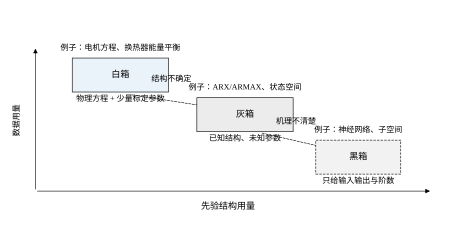
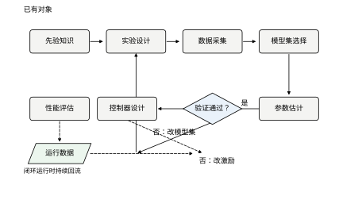
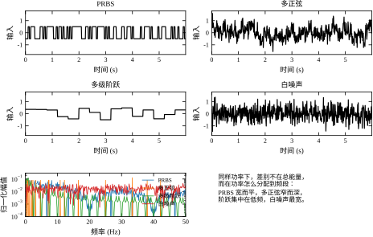
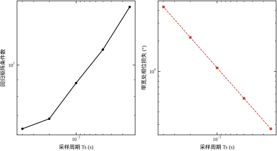
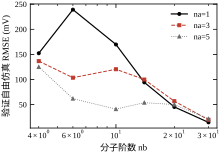
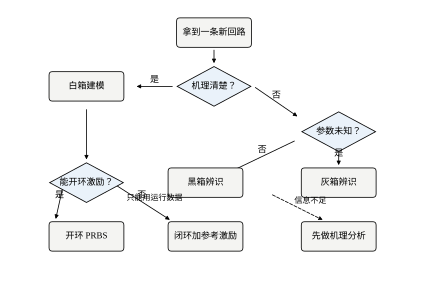

控制器不会比它依据的模型更聪明。比例增益能开多大、积分要不要加、前馈能给多少，这些问题的答案都藏在对象的动态里：时间常数决定带宽，延迟决定相位裕度，增益决定稳态精度。模型错了，整定就是在错误的坐标系里找最优点。
这一章不急着给辨识算法，而是先把“一次辨识实验”当成一个工程项目来设计。要采什么信号、采多久、采样多快、模型取几阶、怎么判断模型够用、失败时怎么回退——这些问题在写代码之前就必须有答案。
一个常见的误解是“先把控制器调好，模型不准也能靠反馈兜住”。反馈确实能兜住一部分，但兜得住多少是可以算出来的。第 15 章已经给过结论：延迟每增加一拍，相位裕度按 \omega_cT_s 线性损失；增益偏差会让前馈产生系统性残余。
本章的示例对象是三阶带纯延迟的过程：
G(s)=\frac{1.8}{(0.5s+1)(0.12s+1)(0.03s+1)}e^{-0.04s} \tag{16-1}
三个极点位于 -2、-8.33、-33.3 rad/s，直流增益 1.8，纯延迟 40 ms。它的 -3 dB 带宽约 1.895 rad/s，阶跃上升到 90% 需要 1.32 s。这三个数字决定了后面所有实验的时间尺度：记录长度取 60 s，约 30 个上升时间；采样周期取 10 ms，约为最快时间常数的三分之一。
如果模型把 0.03 s 的那个极点漏掉，会发生什么？在 2 rad/s 以下几乎看不出差别，因为该极点在此频段的贡献不到 1%。但在 10 rad/s 以上，相位会少滞后近 20°，控制器的带宽就再也提不上去。模型误差的危害不在于它有多大，而在于它出现在哪个频段。
这个判断可以算到手算精度。把对象近似为一阶加延迟，用内模整定取 K_c=T/[K(\lambda+L)]、T_i=T，设计目标带宽 \omega_c=1/(\lambda+L)。若辨识把增益低估 15%，控制器按偏小的 K 算出偏大的 K_c，实际回路增益就比设计值高 17.6%。取 \lambda=0.5 s、L=0.04 s，设计带宽 1.85 rad/s、相位裕度 43.0°；增益偏差把带宽推到 2.18 rad/s，相位裕度掉到 37.5°。一个 15% 的增益误差，等于白送了 5.5° 裕度，相当于在回路里多插了五拍的纯延迟。这就是为什么第 15 章把“增益误差两倍以内”作为标定基准，而不是“看起来差不多”。
场景一：伺服轴的摩擦。同一台设备，空载和带载的库仑摩擦能差一倍。用空载数据辨识出的模型去设计前馈，带载时误差会回到毫米级。这类问题的关键不是算法精度，而是实验工况要覆盖使用工况。
摩擦的量化影响可以估。库仑摩擦在低速段等效为一个“死区 + 滞后”，空载时 0.35 N·m、带载时 0.7 N·m，折算到位置上是零点几毫米的爬行。若辨识数据只取自空载，模型里根本没有这段非线性，前馈算出的补偿量只有实际需要的一半，剩下的靠积分项慢慢磨——表现为定位时间变长、过冲消失但稳态慢。第 15 章量过这类残差，改善率会从 60% 掉到 20% 以下。
场景二：换热器的时变。换热面结垢会让传热系数在几个月内下降 20% 以上，而一次辨识实验只给你一个快照。模型不是一次性交付物，它需要重标周期与在线监控，这部分内容见 §16.5。
场景三：只能闭环运行的回路。有些过程不允许开环激励：开环会超温、超压或飞出工作区。此时只能用正常运行数据辨识，而正常运行数据里的控制量与噪声相关，直接套最小二乘会得到有偏的模型。第 21 章专讲这个问题，本章 §16.6.6 先把它量出来。
三个场景对应三种失败：工况不全、时间失效、数据不合格。它们的共同点是，问题都不在参数估计算法，而在实验设计。
三类失败在验证集上有各自的指纹。工况不全的表现是验证误差是训练误差的 3–5 倍，且误差集中在工况切换的瞬态段；时间失效的表现是验证当下还过得去，但残差监控在几个月后系统性抬升，抬升的斜率与结垢、磨损的物理过程同步；数据不合格的表现最直接，增益误差可以达到 -100\% 或 +100\%，系数符号反掉，自由仿真几拍内就发散。看到这三种指纹，先回去查实验设计，不要调算法。
按先验知识的多少，模型集可以排成一条谱，见图 16-2。

白箱从物理方程出发，参数有明确物理含义，例如电机的 K_T、J、B。它的优点是外推可靠、参数可解释；缺点是需要机理知识，且复杂对象的方程往往写不出来。
灰箱保留已知结构，只让未知参数由数据决定。本章的 ARX 就是灰箱的一种极端形式：结构固定为线性差分方程，所有系数都待估。工程上更常见的是“部分已知”：比如知道是一阶惯性加延迟，只标定 K、T、L 三个量。
一阶加延迟的标定最能说明灰箱的价值。同样一组数据，黑箱要估十几个系数，灰箱只估三个，参数方差小一个量级，而且 K、T、L 都能拿去和工艺常识对照：K 应等于稳态输出比输入，T 应接近执行机构的时间常数，L 应等于纯延迟加一拍。三个数里任何一个离谱，立刻能判断是数据问题还是结构问题。灰箱的可靠性来自“参数可被常识否证”，而不只是参数少。
黑箱只假定输入输出之间存在某种映射，连阶数都交给数据选。神经网络与子空间方法属于这一类。它的表达能力强，但外推最不可靠，验证成本也最高。
图 16-2 把三类模型集排成三行，左侧是输入的先验知识，右侧是产物的可信范围。从上到下，先验逐级减少，数据需求逐级增加，虚线框表示“结构由人定、参数由数据定”的部分越来越大。
选择的原则不是“越先进越好”，而是能用白箱就不用灰箱，能用灰箱就不用黑箱。每降一级，需要的数据量增加一个量级，可解释性下降一档，验证成本上升一档。第 15 章的教训在这里同样成立：结构误差是底，数据只能让你更快地撞到底。
初学者常把辨识等同于“找一条曲线穿过数据点”。两者的目标不同：拟合关心的是在已有数据上误差小，辨识关心的是在未见过的工况上预测准，并最终让闭环性能达标。
这个区别可以量化。本章 §16.6.5 的表 16-6 里，训练集上的一步预测误差随阶数单调下降，但验证集上的自由仿真误差并不随阶数单调改善：n_a=5 那一行在 n_b 从 12 增到 20 时就从 0.0474 反弹到 0.0500。如果只看训练误差，你会一路加阶数，最后得到一个在训练数据上完美、在现场上一塌糊涂的模型。
第二个区别是约束。拟合可以任意选函数形式，辨识必须在可辨识的模型集里选：结构要能由输入激励出来，参数要能被数据区分开。§16.3 会把这件事写成持续激励条件。
第三个区别是交付物。拟合的交付物是一条曲线，辨识的交付物是一组参数、一份验证报告和一条适用边界。缺了后两样，模型没法被别人接手。
第四个区别是“下限”的存在。拟合的误差可以随模型复杂度无限逼近零（在训练集上），辨识的误差有一个结构决定的地板。第 15 章量过这个地板：用同一台伺服轴，无论样本加到多少，速度自由仿真误差都停在 3.05 mm/s 附近不再下降。地板之下来自未建模的动态与非线性，数据只能让你更快地撞上去，不能穿透。知道地板在哪，才知道什么时候该停手。
本章按“设计一次实验”的顺序展开，对应图 16-1 的外圈。

图 16-1 的内圈是算法，外圈是本章要走的五步：定目标与模型集、设计激励、采集与预处理、估计、验证与交付。外圈有一条回到“设计激励”的虚线，表示验证不通过时先怀疑激励而不是先换算法——多数失败案例的原因是没有激励到该激励的频段。
先给定义（§16.2）：数据、模型集、准则、验证四要素，以及一步误差与自由仿真误差的区别。再讲性质（§16.3）：最小二乘的几何意义、持续激励、闭环可辨识性、激励谱怎么选。然后是数值实现（§16.4）：预处理、回归矩阵、延迟估计、数据划分。工程部分（§16.5）算三笔账：成本、安全、可操作性。仿真部分（§16.6）用五个实验把前面的结论逐个量化。最后（§16.7）给检查表与常见错误。
全章围绕一个判断：这次辨识实验，值不值得做，做出来的模型敢不敢用。 后面第 17–22 章会分别展开具体算法，本章只负责把实验设计这一步做扎实。
五步里只有“估计”一步依赖算法，其余四步都是工程判断。这个比例值得强调：现场失败的项目，绝大多数不是卡在算法上，而是卡在“没想清楚模型要干什么”或“激励没设计好”。因此本章 §16.2 与 §16.3 的公式都只保留到能支撑判断的程度，够用即止，不做数学上的完整展开。
阅读顺序可以按需要跳。只想知道怎么做实验的读者，可以从 §16.5 开始，再回看 §16.2 的四个要素；只想弄清算法的读者，§16.3 是核心，其余各节是对它的工程注解；要把代码跑起来的读者，§16.4 与 §16.6 提供了完整的数值路径与复现参数。
同一个对象，不同用途对模型的精度要求差一个量级。先定用途，再定精度，最后才能反推激励与采样——这个顺序反了，就会出现“用监控级的数据去做前馈级的设计”。
监控与报警只关心“模型有没有偏离基线”，增益误差 20% 以内完全够用。这类辨识可以用正常运行数据做，不需要额外激励。
控制器整定要的是带宽附近的幅值与相位。增益误差 10% 以内、相位误差 5° 以内，大致对应本章实验 1 里多级阶跃与多正弦的水平。
前馈与逆模型最苛刻。前馈通道不经过反馈，它的误差没有回路去纠正，相位误差超过 3° 就可能让前馈在某个频段起反作用。这要求辨识在参考轨迹的主频段上准确，而不是全频段平均准确。
模型预测控制看的是自由仿真的累积误差。预测时域越长，极点和延迟误差被放大得越多，对结构的要求高于对参数的要求。这也是第 15 章强调“结构误差是底”的原因。
四档要求对应四种实验预算：监控级可以复用历史数据，整定级需要一次 30–60 个上升时间的开环实验，前馈级还要补一段覆盖参考轨迹频段的专门激励，预测级必须先确定结构再标参数。先写清用途，能省掉一半的停机时间。
把四档放到同一张图上会更清楚。横轴是频率，纵轴是“模型误差允许到多大”。监控级允许的误差带是一条几乎水平的粗带，20% 以内都算合格；整定级收窄到 10%，并且在穿越频率附近再收窄一半；前馈级的误差带不是水平的，它跟着参考轨迹的谱走，轨迹能量集中的频段要求 3%，其余频段可以放宽；预测级既要求幅度也要求相位，而且在低频段要求最严，因为时域积分会把低频误差累积成很大的位置偏差。
这条“误差带随频率变化”的认识，是本章后面几节反复用到的。§16.3.6 的频域加权 J_W 就是它的数学形式：不是所有频率上的误差同等重要，权重应当由用途决定。现场常见的错误是拿一个全频段的标量误差（比如自由仿真的 RMS）去验收所有用途，结果要么在前馈频段不够准，要么在无关频段花了冤枉功夫。
边界划清楚，读起来才不费劲。本章不推导具体的估计算法：最小二乘只给到正规方程，递归形式、子空间、极大似然都留给第 17–22 章。本章也不教控制器设计：PID 整定见第 44 章与第 106 章，预测控制见第 58 章与第 80 章，Smith 预估见第 47 章与第 107 章。本章更不涉及学习类方法，那部分在第 15 章已经建立了框架。
本章只做一件事：把“一次辨识实验”从想法变成可执行、可验收的工程流程。所有公式都服务于这个目的——正规方程用来解释条件数，持续激励用来解释激励谱，偏差方差分解用来解释阶数选择。凡是不能转化成“实验前该改什么参数”的推导，都没有写进来。
上一节反复出现四个词：数据、模型、准则、验证。它们在工程口语里含义模糊，一旦落到公式就必须精确，否则后面所有的“误差”都没有统一口径。
把一次辨识记作四元组 (\mathcal{D},\mathcal{M},J,\mathcal{D}_{\mathrm{val}})。
数据集 \mathcal{D}=\{(u[k],y[k])\}_{k=1}^{N} 是被控对象的输入输出序列，采样周期 T_s 固定。除了这两个数组，\mathcal{D} 还必须带元数据：工况（负载、温度、转速区间）、传感器量程与分辨率、执行器限幅与死区、采集时段。缺了元数据，数据只能用来拟合，不能用来交付。
元数据至少包含八项，缺一项就会在某个环节卡住：采样周期与时钟源（是否与控制器同步）、传感器量程与分辨率、传感器滤波与标定系数、执行器限幅与死区、执行器速率限制、工况标签（负载、温度、转速）、控制器参数与运行模式（手动/自动）、异常事件标记（报警、急停、通信中断）。这八项里，后两项最常被漏掉——而恰恰是它们决定了哪些数据段必须剔除。
模型集 \mathcal{M}=\{G(q,\theta):\theta\in\Theta\} 是候选模型的全体，q 为前移算子。选模型集就是选结构：几阶、有没有延迟、噪声进入点在哪。\Theta 是参数的允许范围，先验知识（增益为正、时间常数在某个区间）应当写成约束，而不是事后筛选。
准则 J(\theta;\mathcal{D}) 把“哪个模型更好”变成一个数。最常用的是输出误差平方和，也可以用一步预测误差、频域加权误差或闭环性能指标。准则决定了估计量的一致性，也决定了优化难度。
验证集 \mathcal{D}_{\mathrm{val}} 是与 \mathcal{D} 不重叠、且工况更接近实际使用的一段数据。它的作用只有一个：判断模型能不能用。表 16-1 把四要素的交付形式与常见偷懒做法并列，后果一栏是现场最常见的翻车方式。
表 16-1 辨识四要素及其交付形式
| 要素 | 形式化 | 交付物 | 常见偷懒 | 后果 |
|---|---|---|---|---|
| 数据 | \mathcal{D}=\{(u[k],y[k])\}_{k=1}^{N} | 原始数组 + 工况元数据 | 只存两列 CSV | 换工况后无法判断模型是否越界 |
| 模型集 | G(q,\theta),\ \theta\in\Theta | 结构说明 + 参数范围 | 直接上高阶黑箱 | 外推发散，参数无物理含义 |
| 准则 | J(\theta;\mathcal{D}) | 指标定义与权重 | 只用训练误差 | 阶数一路加，验证误差反弹 |
| 验证 | \mathcal{D}_{\mathrm{val}},J_{\mathrm{val}} | 验证报告 + 适用边界 | 拿训练集当验证集 | 交付即失效 |
四要素缺一，辨识就退化成拟合。第 15 章的表 15-2 已经区分过这两件事，这里给出可执行的形式。
本章与后续三章统一使用 ARX 结构作为基线：
y[k]=-\sum_{i=1}^{n_a}a_i\,y[k-i]+\sum_{j=1}^{n_b}b_j\,u[k-j]+e[k] \tag{16-2}
其中 n_a 为分母阶数（输出记忆长度），n_b 为分子阶数（输入记忆长度），e[k] 为方程误差。延迟不单独设参数，靠 b_1,\dots,b_{n_k} 取零来体现；这样做的好处是延迟估计变成“看前几个系数是否接近零”，不需要额外的整数搜索。
把待估参数与回归向量排成列：
\varphi[k]=\big[-y[k-1],\dots,-y[k-n_a],\ u[k-1],\dots,u[k-n_b]\big]^{\mathsf T},\qquad \theta=\big[a_1,\dots,a_{n_a},b_1,\dots,b_{n_b}\big]^{\mathsf T} \tag{16-3}
式 (16-2) 就变成一个线性回归：
y[k]=\varphi^{\mathsf T}[k]\,\theta+e[k] \tag{16-4}
这一步转换是 ARX 全部价值的来源。参数以线性方式进入模型，准则对 \theta 是二次型，最优解有闭式表达，不需要迭代、不担心局部极小。代价在噪声侧：ARX 假定噪声从输出端直接进入，等价于 e[k] 是白噪声经过 1/A(q) 滤波。若真实扰动是慢漂移（多数过程如此），这个假定会把扰动“吸收”进分母系数，使低频段增益估计偏高。第 18、19 章会用 ARMAX 与输出误差模型修正这一点，本章先把它作为已知偏差记录下来。
代码实现里有一处符号约定需要说明：为减少负号，程序把式 (16-2) 中的负号吸收进 \theta，回归向量直接取 [y[k-1],\dots,u[k-1],\dots]，此时 \theta 的前 n_a 个元素是 -a_i。正文公式与代码系数的关系为 \theta_{\text{code},i}=-a_i，这一转换在 ch016_sim.py 的 fit_arx 与 freq_resp 里成对出现，改动其一必须同步另一处。
阶数与极点的对应关系可以直接算。连续极点 s_i 映射到离散域为 z_i=e^{s_iT_s}：本章三个极点 -2、-8.33、-33.3 在 T_s=0.01 s 下分别落到 0.9802、0.9200、0.7165。要把这三个极点都表示出来，至少需要 n_a=3；n_a=1 时模型只有一个极点，它只能把慢极点放在 0.98 附近，快极点的效应被迫摊到分子系数上。这就解释了 §16.6.5 里为什么 n_a=1,n_b=30 仍能给出低验证误差：分子足够长时，有限脉冲响应可以把剩余的动态“展开”，代价是外推能力差。
反过来，n_a 超过真实阶数也不会更好。多出来的极点没有对应的物理动态，只能去拟合噪声或非线性残差，表现为参数方差上升、自由仿真出现实测中不存在的慢振荡。阶数的正确值由对象的极点个数决定，不由误差曲线单独决定。
有了式 (16-4)，模型的好坏可以用两种方式衡量。
第一种是一步预测：用实测的历史输出构造回归向量，只预测下一拍。
\hat y[k\mid k-1]=\varphi^{\mathsf T}[k]\hat\theta,\qquad \varepsilon[k]=y[k]-\hat y[k\mid k-1] \tag{16-5}
第二种是自由仿真：把模型自己上一拍的输出当作历史，闭环地往前推。
\hat y_f[k]=-\sum_{i=1}^{n_a}\hat a_i\,\hat y_f[k-i]+\sum_{j=1}^{n_b}\hat b_j\,u[k-j] \tag{16-6}
两个指标分别为
J_{1}=\sqrt{\frac{1}{N}\sum_{k}\varepsilon^{2}[k]},\qquad J_{\mathrm{free}}=\sqrt{\frac{1}{N}\sum_{k}\big(\hat y_f[k]-y[k]\big)^{2}} \tag{16-7}
差别全在“历史输出从哪来”。式 (16-5) 每一步都被实测值拉回真值，误差不累积；式 (16-6) 一旦某拍偏了，偏差会通过 \hat a_i 进入后续所有预测，误差按极点模长累积。表 16-2 是这两者的对照。
表 16-2 一步预测与自由仿真的分工
| 维度 | 一步预测 J_1 | 自由仿真 J_{\mathrm{free}} |
|---|---|---|
| 历史输出 | 实测 y[k-i] | 模型输出 \hat y_f[k-i] |
| 误差是否累积 | 否，每拍复位 | 是，按极点模长放大 |
| 敏感于 | 参数拟合精度、噪声水平 | 结构误差、极点位置、延迟 |
| 反映的问题 | 这组数据拟合得好不好 | 换个输入还能不能算对 |
| 适用场景 | 训练、调参、快速筛选 | 验收、前馈设计、控制器整定 |
| 实验 4 数值（n_a=1,n_b=6） | 0.0076 | 0.2392 |
表 16-2 最后一行的两个数字相差 30 倍，来自同一组参数。这就是 §16.1.4 所说“辨识不是拟合”的量化版本：J_1 小只说明模型能跟上数据，J_{\mathrm{free}} 才说明模型懂了这个对象。控制器整定、前馈逆模型、MPC 的内部预测，用的都是自由仿真能力，因此验收必须以 J_{\mathrm{free}} 为准。
需要提醒的是，J_{\mathrm{free}} 对初值敏感。式 (16-6) 从 k=n_a+n_b 起算，前若干拍的 \hat y_f 用实测值填充；若把整段仿真从零初值硬推，前 1–2 个上升时间的误差会把指标抬高。工程做法是丢弃前 10% 的样本再统计，本章所有 J_{\mathrm{free}} 都已按此处理。
两个误差指标之外，还有三项残差检验，用来回答“模型是否已经把数据里有用的信息榨干”：
三项检验都不通过时，不要急着加阶数。先看残差的自相关形状：若在延迟附近出现尖峰，是延迟估错；若呈指数衰减，是极点漏了；若是缓慢衰减的长尾，是噪声模型不对（ARX 的固有缺陷，见 §16.3.2）。
式 (16-4) 堆成矩阵形式 \mathbf{y}=\Phi\theta+\mathbf{e}，最小二乘解为
\hat\theta=(\Phi^{\mathsf T}\Phi)^{-1}\Phi^{\mathsf T}\mathbf{y},\qquad \text{唯一} \iff \operatorname{rank}\Phi=n_a+n_b \tag{16-8}
秩条件不满足时，存在非零向量 v 使 \Phi v=0，则 \theta 与 \theta+v 给出完全相同的预测。数据没法区分这两个模型，任何算法都救不回来。这就是“可辨识”的含义：不是算法能不能收敛，而是数据里有没有信息。
秩条件落到输入信号上，就是持续激励（persistently exciting）。对阶数 n 的持续激励，要求输入的自相关矩阵正定：
R_u=\begin{bmatrix}r_u(0)&\cdots&r_u(n-1)\\ \vdots&\ddots&\vdots\\ r_u(n-1)&\cdots&r_u(0)\end{bmatrix}\succ 0,\qquad n\ge n_a+n_b \tag{16-9}
换成频域说法更直观：输入谱至少要包含 n/2 条互不相同的谱线，且这些谱线要铺满关心的频段。阶跃只有一条（直流）谱线，正弦也只有一条，单独用它们辨识二阶以上模型必然秩亏；这也是工程上“最少做两次不同频率的正弦扫频”的由来。
本节的多正弦实验给了一个能记住的教训。最初把 20 条谱线全部铺在 0–0.7 Hz，看上去“覆盖了对象的主要频段”，实际 \operatorname{rank}\Phi=13<15，条件数 1.2\times10^{14}，一步误差 7.7×10⁵，完全不可用。把谱线按对数分布铺到接近奈奎斯特频率后，条件数降到 299.6，误差回到 0.0213。原因不是“高频更重要”，而是回归矩阵里同时含有 u[k-1],\dots,u[k-12] 这 12 个移位版本，低频窄带信号在这些移位之间高度相关，矩阵自然接近奇异。激励谱要照顾的不是对象带宽，而是回归向量的维数。
单次阶跃是最容易踩的坑。二阶对象取 n_a=2,n_b=2，共 4 个参数；一次阶跃的输入只有一个跳变，之后恒定，u[k-1] 与 u[k-2] 完全相同，两列精确共线。输出的响应是两条指数之和，看起来“信息很丰富”，但输入侧只有两个独立方向（跳变前、跳变后），秩最多 3，第 4 个参数永远估不出来。这就是为什么现场做阶跃辨识，至少要“上-下-上”三段，让输入出现正负两个方向的跳变。
工业现场多数回路不允许开环激励，只能采正常运行数据。这时输入不是独立的：它由控制器根据输出算出来，
u[k]=C(q)\big(r[k]-y[k]\big) \tag{16-10}
把式 (16-10) 代入式 (16-3)，回归向量里的 u 分量全部变成 y 与 r 的线性组合，\Phi 的列之间出现精确的线性相关。若参考 r 恒定，则 \operatorname{rank}\Phi<n_a+n_b，式 (16-8) 无解，条件数为无穷大。§16.6.6 的实验 5 会给出这个极限：闭环且无参考激励时，辨识出的增益误差恰好 -100\%，也就是模型把对象的增益整个丢了。
注入参考激励能恢复秩，但恢复不了无偏性。控制量 u 与输出噪声通过控制器形成反馈，使得 e[k] 与 \varphi[k] 相关，最小二乘的正交条件 \mathbb{E}[\varphi e]=0 被破坏，估计量有偏。实验 5 里加了幅值 0.2 的参考激励后，条件数回到 74.1，但增益误差从开环的 -14.77\% 翻转成 +14.61\%——偏差不但没消，方向还变了。这类问题需要工具变量法、间接辨识或联合输入输出辨识，第 21 章专门处理。
工程上由此得到两条硬规矩：闭环辨识必须注入激励，且激励幅值要写进安全评估；只靠运行数据“顺手”辨识出来的模型，只能用于监控与报警，不能用于整定。
闭环可辨识的三个条件，可以用一个极端例子说明必要性。若控制器是纯比例、无延迟、参考恒定，则 u[k]=K(r-y[k])，于是 u[k-1]=K r-K y[k-1]——控制量的列与输出的列精确线性相关，回归矩阵必然秩亏，无论采多少数据都没用。破这个局有三种办法：加参考激励（让 u 多一路独立分量）、让控制器含积分或延迟（打破瞬时代数关系）、采集手动模式下的数据。三条里至少要满足一条。
这三条对应三个工程判断：激励够不够宽（秩）、控制器结构是否“太干净”（共线）、噪声与输入是否相关（偏差）。三者都过关，闭环数据才能拿来辨识；只过第一条，得到的模型有偏；一条都不过，得到的模型连符号都可能是错的。
ARX 不是唯一的写法，它的偏差全部来自“噪声从输出端直接进入”这个假定。换一个噪声进入点，就得到另一族模型：
四者的选择原则很简单：噪声主要来自测量端（传感器白噪声、采样噪声），用 OE；噪声主要来自过程端（负载扰动、流量波动），用 ARMAX 或 BJ；只做快速摸底、不在乎低频偏差，用 ARX。本章与第 17–19 章都以 ARX 为起点，正是因为它把“结构”和“估计”两件事分开了：ARX 的结果可以直接读出极点与增益，方便与物理直觉对照。
选择不必靠猜，残差的自相关与谱能给出证据。用 ARX 拟一遍，取残差 \varepsilon[k]：若自相关在滞后零处是尖峰、其余接近零，说明残差近似白噪声，ARX 的噪声假定成立，偏差不大；若自相关拖着一条指数尾巴、衰减时间与对象时间常数同量级，说明残差被 1/A 过度滤波，噪声实际从输出端进入，应当改用 OE；若自相关有周期性峰，说明有未建模的扰动源（例如工频或机械周期），先把那段数据或频率排除再谈参数化。
这条检验的成本很低，却经常被跳过。跳过它的后果是把“模型结构不对”误诊成“阶数不对”，于是不断加阶数去追一个形状固定的残差尾巴，验证误差反而变大。本章只用 ARX，所以读 §16.6 的那些表时要记住：其中的 -14\% 到 -32\% 增益偏差里，有一部分来自数值与激励，另一部分来自 ARX 的噪声假定本身；后者换成 OE 在原理上可以消除，代价是要解非二次优化，这正是第 19 章的内容。
参数个数为 n_a+n_b，样本数为 N，一个常用的下限是 N/(n_a+n_b)\ge 10。
低于 10 时，参数方差会大到让验证误差失去意义；高于 100 后，继续加数据对自由仿真误差的改善很小，瓶颈让位给结构误差——第 15 章那条“数据效率曲线”就是这个形状。
用本章的数字验算：训练段 10 s、T_s=0.01 s，共 1000 个样本。n_a=1,n_b=30 时参数 31 个，比例 32；n_a=5,n_b=30 时参数 35 个，比例 28.6。两者都远高于 10，按理都该估得不错，但表 16-6 里前者验证误差 0.0145、后者 0.0216。差别不在数据量，而在信息分布：多出的 4 个分母参数要与已有的 30 个分子参数争夺同一批低频信息，边际信息为负。
这条比例只解决“够不够估”，不解决“估得准不准”。数据量是入场券，激励谱才是分数。
比例判据有一个容易被忽略的前提：它把 N 个样本当成彼此独立的信息。时域数据不满足这一点——相邻样本的间隔是 T_s，而对象的动态时间尺度是秒级，一个上升时间里的一百个样本其实只提供了几个独立观测。若用相关时间折算有效样本数 N_{\mathrm{eff}}\approx N\cdot T_s/T_{\mathrm{corr}}，本章基线中 T_s=0.01 s、T_{\mathrm{corr}} 约 0.2 s，1000 个样本只相当于 50 个独立观测，比例从 32 掉到 1.6。这就是为什么同样“样本数足够”的两组数据，辨识精度可以差一个量级：真正决定精度的是独立信息量，而不是采样点的个数。
这个修正也解释了 §16.6.4 里“采样加倍精度不变”的结果。采样从 10 ms 减到 2.5 ms，N 翻两番，但 T_{\mathrm{corr}} 由对象决定不变，N_{\mathrm{eff}} 只按比例增加；同时 n_b 翻两番，参数个数同步膨胀。分子分母一起涨，比例几乎不动，而条件数却在恶化。所以采样周期的选择从来不是“越密越好”，它有一个由延迟取整与条件数共同确定的下界。
§16.2 把辨识写成了线性回归，但“能解出来”和“解得准”是两件事。这一节从最小二乘的几何出发，依次说明偏差、方差、激励与阶数各自如何影响结果，最后给出可直接用于实验设计的几条不等式。
把式 (16-4) 在 k=1,\dots,N 上堆叠，记 \mathbf{y}\in\mathbb{R}^{N}、\Phi\in\mathbb{R}^{N\times(n_a+n_b)}，准则写成
J(\theta)=\|\mathbf{y}-\Phi\theta\|_2^{2} \tag{16-11}
对 \theta 求梯度并令其为零，得到正规方程：
\Phi^{\mathsf T}\Phi\,\hat\theta=\Phi^{\mathsf T}\mathbf{y}\quad\Longrightarrow\quad \hat\theta=(\Phi^{\mathsf T}\Phi)^{-1}\Phi^{\mathsf T}\mathbf{y} \tag{16-12}
几何上，\Phi\hat\theta 是 \mathbf{y} 在 \Phi 列空间上的正交投影，残差 \mathbf{y}-\Phi\hat\theta 与列空间垂直。这个解释给出两个直接推论：只要 \Phi 列满秩，投影唯一，解也唯一；若某一列近似是其他列的线性组合，投影仍然存在，但方向对数据扰动极其敏感。
把真值代入式 (16-12)，得到估计误差的表达式：
\hat\theta-\theta=(\Phi^{\mathsf T}\Phi)^{-1}\Phi^{\mathsf T}\mathbf{e} \tag{16-13}
若 \mathbf{e} 是零均值白噪声、方差 \sigma^{2}，且与 \Phi 统计独立，则
\operatorname{cov}(\hat\theta)=\sigma^{2}(\Phi^{\mathsf T}\Phi)^{-1} \tag{16-14}
式 (16-14) 是本节的中心结果。(\Phi^{\mathsf T}\Phi)^{-1} 的最大特征值约为 1/\sigma_{\min}^{2}(\Phi)，而条件数 \kappa=\sigma_{\max}/\sigma_{\min}，于是参数标准差被放大 \kappa 倍。激励设计的目标，本质上就是把 \kappa 压下来。
把列归一化后，\Phi^{\mathsf T}\Phi 的对角元约为 N，最小特征值约为 N/\kappa，最弱方向上的参数标准差因此按 \sigma\sqrt{\kappa/N} 增长。这个标度律给出两条实用结论：样本量翻四倍，标准差减半；条件数翻四倍，最弱方向的标准差翻倍。两者可以互相兑换，但兑换率不对称——把 \kappa 从 300 降到 75，等价于把数据量增加到 16 倍。这就是为什么激励设计的收益远大于多采数据。
式 (16-14) 成立的前提是 \mathbb{E}[\Phi^{\mathsf T}\mathbf{e}]=0。这个条件不成立时，最小二乘不再无偏。取概率极限：
\hat\theta\;\xrightarrow{\ p\ }\;\theta+\big(\mathbb{E}[\varphi\varphi^{\mathsf T}]\big)^{-1}\mathbb{E}[\varphi\,e] \tag{16-15}
第二项就是偏差。它不会随样本量增大而消失，只会越来越稳定地停在错误的值上——这正是偏差比方差危险的地方：方差大可以用更多数据压下去，偏差大只能用换方法解决。
ARX 的偏差有明确的物理来源。式 (16-2) 里的 e[k] 是方程误差，而现场测到的扰动通常加在输出端。若真实过程是 y[k]=G(q)u[k]+v[k]，v 为有色噪声，那么代入 ARX 结构后 e[k]=A(q)v[k]，它与 y[k-i] 天然相关，式 (16-15) 的第二项非零。表现是低频段增益被系统性抬高：慢漂移被模型当成了“对象的一部分”。第 18 章的 ARMAX 与第 19 章的输出误差模型，都是在改噪声进入点来消这个偏差。
偏差在频域上不是平的。把 e=A v 代回，偏差项等效于用 |A(e^{j\omega})|^{2}S_v(\omega) 对误差加权，而 A 在低频接近 1+\sum a_i、在高频趋于 1。于是扰动能量越集中在低频，低频段的偏差就越大，高频段几乎不受影响。现场看到的典型形状是：0.1 rad/s 处增益偏高 20%–30%，10 rad/s 处只偏高 2%–3%。如果整定只用到带宽以上，这个偏差可以忽略；如果要做低频前馈或抑制定值扰动，它就会直接变成稳态误差。
还有一类偏差与噪声无关，来自输入端的测量误差。若 u 本身带噪声（阀位反馈不准、指令被量化），回归量就“不干净”，这叫变量误差。它的效果与输出噪声相反：让增益向零收缩，且同样不随样本量消失。识别方法是比对两种数据源——用控制器内部指令与用阀位反馈各辨识一次，若两者增益差得系统性偏大，就是输入端的问题。补救办法是换更准的反馈，或者用工具变量法把输入噪声的影响剥离。
闭环是偏差的极端情形。§16.2.5 已说明无激励时秩直接丢失；有激励时秩恢复但相关性仍在，实验 5 量到的增益误差从 -14.77\% 翻到 +14.61\%，就是式 (16-15) 第二项在换号。
§16.2.4 只说“谱线要够多”，工程上需要知道“多宽”。回到回归矩阵：第 j 列是 u[k-j]，与第 j+1 列只差一拍。设输入的最高角频率为 \omega_{\max}，两列之间的相位差约为 \omega_{\max}T_s；经过 n_b 次移位，累计相位差为
\Delta\phi_{\max}\approx \omega_{\max}\,n_b\,T_s \tag{16-16}
\Delta\phi_{\max} 太小，这 n_b 列就像是同一个信号的缩放副本，矩阵接近秩亏。工程判据取
\omega_{\max}\,n_b\,T_s\ \gtrsim\ 2 \tag{16-17}
即最高谱线的周期不应长于 n_bT_s 的三倍左右。用本章的参数验算：n_b=12、T_s=0.01 s，要求 f_{\max}\gtrsim 2.7 Hz。最初那版多正弦只铺到 0.7 Hz，\Delta\phi_{\max}\approx0.53，远低于阈值，秩亏是必然的；铺到 46 Hz 后余量充足，条件数降到 299.6。
这条判据解释了一个反直觉的现象：为了让低频模型准，激励反而要包含高频。 高频成分在这里不负责提供对象信息，它负责把回归矩阵的列“撑开”。若现场不允许高频激励（怕磨损、怕噪声），替代方案是降低 n_b，也就是接受更短的记忆长度，而不是硬用窄带数据去估高阶模型。
PRBS 的谱结构可以直接算。电平保持 m 拍时，时钟周期为 mT_s，功率谱的第一个零点在 f_z=1/(2mT_s)；m=5、T_s=0.01 s 给出 f_z=10 Hz，能量集中在 0–10 Hz，相对 0.3 Hz 的带宽有三十多倍余量。谱线间隔由记录长度决定，1/60 s 给出 0.0167 Hz，在 0–0.3 Hz 内约有 18 条谱线，足够支撑 13 个参数。把 m 增大到 20，f_z 降到 2.5 Hz，低频能量更集中、增益估得更准，但 n_b=12 对应的高频系数会失去信息；把 m 减到 1，信号接近白噪声，条件数好看而低频信噪比恶化。m 的选择就是这两端的折中，本章取 5 是让 f_z 覆盖到带宽的三十倍，同时保留足够的低频功率。
采样周期同时出现在两个地方，且方向相反。
第一条是相位。零阶保持本身带来约 \omega T_s/2 的相位滞后，采样与计算再加一到两拍。在期望带宽 \omega_c 处，这部分损失近似为
\Delta\varphi_{\mathrm{s}}\approx \omega_c\left(\frac{T_s}{2}+T_d\right) \tag{16-18}
T_s 越小损失越小。经验取 T_s\le T_{\min}/5，T_{\min} 为对象最小时间常数；本章 T_{\min}=0.03 s，取 0.01 s，正好是三分之一。
第二条是条件数。固定记忆长度 T_{\mathrm{mem}} 时，n_b=T_{\mathrm{mem}}/T_s，T_s 减半，n_b 翻倍，待估参数翻倍，而信息量并没有同步增加：
n_b=\frac{T_{\mathrm{mem}}}{T_s},\qquad \kappa(\Phi)\ \text{随}\ n_b\ \text{近似线性上升} \tag{16-19}
§16.6.4 的实测印证了这一点：T_s 从 0.04 s 减到 0.0025 s，n_b 从 12 增到 200，条件数从 63.6 升到 151.0，而增益误差始终在 -1.5\% 到 -2.2\% 之间几乎不动。在这个对象上，把采样加快 16 倍没有换来精度，只换来了 16 倍的样本量和更差的矩阵条件。
两条约束的交点就是合理区间：T_s 取 T_{\min}/10 到 T_{\min}/3 之间，再用式 (16-18) 核对带宽处的相位损失是否可接受。低于 T_{\min}/10 的采样率，除非有抗混叠与量化方面的硬需求，否则只是浪费存储与算力。
延迟取整是这条规则的补充。若真实延迟不是 T_s 的整数倍，只能取最近的整数拍，取整误差最大为半拍。以 40 ms 延迟为例：T_s=0.01 s 时正好 4 拍，无误差；T_s=0.015 s 时是 2.67 拍，取 3 拍，多算 5 ms，在 1.9 rad/s 处引入约 0.54° 的相位偏差；取 2 拍则少算 10 ms，偏差约 1.09°。判据是取整误差不超过四分之一拍，超过就换一个能整除的采样周期，或者接受相位偏差并把它写进验证报告。这一条比“采样越快越好”更实用，因为现场采样周期常常受控制器任务周期限制，不是随便能改的。
式 (16-14) 说明参数方差正比于参数个数。阶数增加时，偏差下降（模型能表达更复杂的动态），方差上升（要估的量更多，每个量分到的信息更少）。把两者合起来，验证集上的期望误差近似为
\mathbb{E}\big[J_{\mathrm{val}}^{2}\big]\approx \underbrace{J_{\mathrm{struct}}^{2}}_{\text{结构误差}}+\underbrace{\sigma^{2}\,\frac{n_a+n_b}{N}\,\gamma}_{\text{参数方差}} \tag{16-20}
\gamma 是自由仿真对参数误差的放大系数，通常远大于 1，因为它把参数误差经极点反复放大。式 (16-20) 解释了实验 4 的形状：n_b 从 6 增到 30，J_1 单调下降（方差项主导，参数越多拟合越好），J_{\mathrm{free}} 则整体呈下降趋势但局部反弹——n_a=5 一行在 n_b 从 12 增到 20 时从 0.0474 升到 0.0500。这类反弹是方差项在起作用：多出的 8 个分子参数分到的新信息很少，却要参与同一个最小二乘，参数估计的随机性传到了自由仿真里。
最优阶数落在两项相等附近。实验中 n_a=1,n_b=30 给出 0.0145 的最好验证值，而 n_a=5 的最好值是 0.0216——多出来的 4 个分母参数没有带来结构改善，只贡献了方差。这与对象的真实结构一致：主导动态就是一个慢极点，高阶分母纯属浪费。
实操上不必手算式 (16-20)。做法是扫一组 (n_a,n_b)，各算一次验证 J_{\mathrm{free}}，取最小者，然后用物理合理性复核：直流增益是否接近设计值、时间常数是否落在工艺常识范围内、极点是否都在单位圆内。三项都过，才接受这个阶数。信息准则给出的是同一件事的解析版本：AIC 取 N\ln\det\hat\Sigma+2p，MDL 取 N\ln\det\hat\Sigma+p\ln N，p=n_a+n_b 为参数个数，\hat\Sigma 为残差协方差。MDL 的惩罚项随 \ln N 增长，比 AIC 更保守，样本多时更倾向低阶。两者在工程上的差别不大，重要的是“惩罚项必须存在”，否则一定选到阶数上界。第 19 章会给出这两个准则的推导。
扫阶数的顺序有讲究。先固定 n_a 扫 n_b，再放开 n_a，这样每次只动一个维度，误差曲面的形状容易看清；若两个维度一起扫，很容易把“n_b 太小造成的结构误差”误读成“n_a 太大造成的方差”。本章实验 4 就是按这个顺序做的：先固定 n_a=1 让 n_b 从 6 走到 30，看到验证误差单调下降而边际收益递减；再固定 n_b=30 让 n_a 从 1 走到 5，看到误差从 0.0145 单调升到 0.0216。
另一个细节是延迟与阶数的耦合。n_k 估大一拍，相当于把第一个分子系数强行置零，模型会自动用一个更长的 n_b 去补偿，于是扫阶数时最优点整体右移。判断办法是同时看两件事：最优 n_b 是否随 n_k 的假设同步移动、自由误差是否对 n_k 特别敏感。若两者都成立，先把延迟定死再扫阶数，不要指望阶数去“吸收”延迟误差。
前五小节把误差当成一个标量。实际使用时，误差在不同频段的代价完全不同：整定关心穿越频率附近，前馈关心参考轨迹的主频段，抑制定值扰动关心低频。把这种差别写进准则，就是频域加权：
J_W(\theta)=\frac{1}{N}\sum_{k}\big\|W(q)\big(y[k]-\hat y[k]\big)\big\|^{2} \tag{16-21}
W(q) 是加权滤波器。取 W 为闭环敏感函数的倒数，等价于让“闭环真正放大”的频段误差最小。三种典型取法：
加权不改变秩，也不改变偏差的来源，它只是把参数方差重新分配到各频段。这一点很重要：加权能让模型“在该准的地方准”，但救不了“数据里没有的信息”。 实操上先做一次无权重的辨识，画出误差的功率谱，看误差堆在哪个频段，再决定权重；通常两次迭代就够，反复调权重容易把验证集“调”进去。
辨识给出的是系数，控制器设计需要的是频率响应。把 \theta 代入传递函数，取 z=e^{j\omega T_s}：
G(e^{j\omega T_s})=\frac{\sum_{j=1}^{n_b}b_j\,e^{-j\omega jT_s}}{1+\sum_{i=1}^{n_a}a_i\,e^{-j\omega iT_s}} \tag{16-22}
分子分母都是复数的加权和，用两行代码就能算。三个特例值得记住。
直流（\omega=0）：所有指数项为 1，增益退化为 K=\sum b_j/(1+\sum a_i)。这个数应当与对象的物理增益对得上，对不上就是结构或偏置出了问题。
低频近似：当 \omega n_bT_s\ll1 时，分子近似为 \sum b_j，分母近似为 1+\sum a_i，与直流同形。这是“低频增益”的严格含义，也是表 16-3 里多级阶跃表现最好的原因——它的能量正好落在这个近似成立的频段。
相位校正：ARX 模型本身不含零阶保持，从连续对象离散时引入的半拍延迟已被吸收进系数，比较相位时要补回 \omega T_s/2。本章所有相位误差都做了这个校正，否则会凭空多出 0.5°–1° 的系统偏差，把采样周期的效应与对象的效应混在一起。
用这个公式回算基线模型：\omega=1 rad/s 处增益 1.46，真实值 1.80，相对误差 -19.11\%，与表 16-4 的 0.40 行完全一致。正文里的每一个百分比，都可以用式 (16-22) 从系数复算出来，这也是核查他人辨识结果最直接的办法——不用重跑数据，只要拿到系数。
误差的频域形状比误差的大小更有诊断价值。五种典型形状，对应五类根因：
相位整体下移，且下移量随频率线性增长：延迟多算了整数拍。每多算一拍，1 rad/s 处多滞后 57.3T_s 度，10 ms 采样对应 0.57°。
低频相位超前：分子里出现了本不该有的零点，通常是延迟少算或阶数过高。自由仿真会表现为“起步比实际快”，随后过冲。
增益在某频点凹陷：出现了一对靠得很近的极点与零点，它们相互抵消，但抵消得不干净。多见于阶数选得过高、参数方差大的情形。
高频增益上翘：噪声被当成了对象动态。ARX 的分子在高频趋于 \sum(-1)^{j}b_j，若高频系数被噪声填满，这条尾巴会翘起来。对策是降 n_b 或改用输出误差模型。
极点贴近单位圆：自由仿真出现持续振荡，而实测没有。这是参数方差把极点推到了稳定边界附近，不是对象真的在振荡。对策是降阶或增加激励。
把这五种形状记住，看一眼 Bode 图就能定位问题，比反复试阶数快得多。这也是第 17 章非参数方法的用处：它先给你一条“看起来对”的频响曲线，再拿参数模型的曲线去叠，形状差异一目了然。
把上面的推导收成五条，后面 §16.4 与 §16.6 都按这五条执行：
这五条之间不是独立的，任一条不满足都会污染后一条的判断。条件数超标时，估出的误差数字本身就不可信，用这样的误差去选阶数等于在噪声里挑最小值；激励不够宽时，偏差会让验证误差整体抬升，阶数的谷底位置随之漂移；采样过快时，条件数恶化会伪装成“需要降阶”。所以执行顺序必须是自上而下：先用前三条把数据质量做实，再用后两条选模型。
清单的用法是在实验前逐条打勾，而不是在结果不好时逐条怀疑。实验前打勾能省掉一轮返工，事后再查往往已经无法补救——数据采完，激励谱就定了，唯一还能改的只有阶数和预处理，而这两样救不回信息缺失。
§16.3 的公式都在离散域。真实对象是连续的，从连续到离散这一步做错，后面的条件数、阶数、验证全部失真。这一节按“拿到数据到算出参数”的顺序，把五个容易出错的环节讲清楚。
示例对象的状态空间实现取 \mathbf{x}=[y,\dot y,\ddot y]^{\mathsf T}，连续矩阵为 \mathbf{A}、\mathbf{B}、\mathbf{C}，零阶保持下的精确离散为
\mathbf{A}_d=e^{\mathbf{A}T_s},\qquad \mathbf{B}_d=\int_{0}^{T_s}e^{\mathbf{A}\tau}\,\mathrm{d}\tau\,\mathbf{B},\qquad \mathbf{C}_d=\mathbf{C} \tag{16-23}
ch016_sim.py 的 discrete(Ts) 用矩阵指数算式 (16-23)，而不是用前向欧拉 \mathbf{A}_d\approx\mathbf{I}+\mathbf{A}T_s。原因是最快极点位于 -33.3 rad/s，T_s=0.01 s 时 \omega T_s=0.33，欧拉离散会把该极点映射到 1-0.33=0.67，而精确值是 e^{-0.333}=0.717，两者差 7%。对一步预测误差而言这只是小偏差，但对自由仿真，极点位置偏差会被反复放大，几十拍后就完全偏离。
纯延迟的处理要单独说明。e^{-0.04s} 在 T_s=0.01 s 下正好是 4 拍，直接串 4 个延时单元即可；若延迟不是采样周期的整数倍，只能用一拍近似或 Padé 近似，前者引入最多半拍误差，后者引入相位偏差。工程上优先调整采样周期让延迟接近整数拍，这一条在第 47 章的 Smith 预估里还会用到。
延迟取整的代价可以算出来。设真实延迟 T_d=1.6T_s，取整成 2 拍，则等效多算了 0.4T_s，在角频率 \omega 处的附加相位误差是 0.4\omega T_s 弧度。取 \omega=10 rad/s、T_s=0.025 s，误差为 0.1 rad，约 5.7°；这个量已经与整定裕度里容许的相位误差同量级。反过来，若把 T_s 缩到 0.005 s，同样的 40 ms 延迟变成 8 拍整，取整误差归零，但 n_b 随之翻倍，条件数又要恶化——这正是 §16.3.4 里两条相反约束的具体体现。
还有一点常被忽略：离散模型与连续模型不是“越精确越好”。用矩阵指数得到的 \mathbf{A}_d 是精确的，可它给出的极点位置依赖于 T_s；把同一个对象在 10 ms 与 25 ms 下各辨识一次，得到的 a_i 数值完全不同，频响却应重合。所以比较两个模型时只能比频响或比阶跃响应，不能直接比系数。这一条在多人协作时尤其重要，否则很容易因为“系数对不上”而误判某一方出错。
第一件是单位统一。第 15 章已经定过口径：位置用 mm，速度用 mm/s，力矩用 N·m。混用单位不会报错，只会让增益估出来差 1000 倍，而且这种错误在图上看起来完全正常。
第二件是去趋势。现场数据常带慢漂移（热膨胀、零点漂移），它会被 ARX 吸收进分母系数，表现为低频增益虚高。做法是对 u 与 y 各自用最小二乘拟合一条直线 a+bt，逐点减掉，并在元数据里记录 a 与 b——验证时要加回去，否则自由仿真的绝对值对不上。若漂移不是线性的（例如温度按指数趋稳），改用一阶高通滤波，截止频率取最低关注频率的十分之一；但高通会带来相位超前，必须在验证时用同一滤波器处理模型输出，否则比较的是两个不同的信号。
第三件是异常段剔除。撞限位、传感器饱和、通信丢包造成的台阶，都会在回归矩阵里留下巨大的杠杆点，一个点就能把 \hat\theta 拉偏。判据用三条：输出超出量程的 95%、控制量连续 n_b 拍不变（饱和）、相邻样本差分超过 10 倍中位数。三条中任一条命中，把该点前后各 2n_b 拍整体剔除，不要只删单点——单点剔除会在序列里留下一个人为的跳变，比原异常更伤模型。
第四件是抗混叠。若采集环节没有模拟低通，高频噪声会折叠到低频，看起来像“对象有个快速模态”，诱导你把阶数抬高。数字端补救的办法是用四阶 Butterworth 低通，截止频率取 0.4/T_s 对应的频率，并且前后各滤一遍（零相位滤波），否则滤波器自身的相位滞后会被辨识成对象延迟。本章的仿真在输出端加了 5 μm 白噪声，未做抗混叠，这正好对应现场最常见的疏漏；实验结果里那些 -14\% 量级的增益偏差，有一部分就来自这里。
四件的顺序不能颠倒。先剔异常再滤波，是因为异常点会让滤波器的初始条件剧烈振荡，把异常扩散到几十拍；先滤波再去趋势，是因为滤波器会改变端点，去趋势的斜率会被端部效应带偏。正确的顺序是：单位统一 → 异常段剔除 → 抗混叠滤波 → 去趋势。脚本里应把这一顺序写成固定调用链，而不是让每段数据各自决定。
还有一个容易被漏掉的检查：输入输出是否同源时钟。若 u 与 y 由两块采集卡分别记录，两路的晶振偏差会造成缓慢的时间漂移，几十秒后错开半拍甚至一拍。表现是延迟估计随数据段变化而不稳定，或者条件数正常但增益始终偏低。判据很简单：把数据切成前后两半分别估延迟，两半相差超过 1 拍就说明存在时钟漂移，应在一路数据上按时间戳重采样对齐，而不是靠调整延迟参数去“凑”。
直接按式 (16-12) 求 (\Phi^{\mathsf T}\Phi)^{-1} 在数值上是下策：条件数被平方，10^{7} 的矩阵会变成 10^{14}，双精度也救不回来。做法分两步。
第一步，列归一化。令 s_j=\|\Phi_{:,j}\|_2，构造 \tilde\Phi=\Phi\,\mathrm{diag}(1/s_1,\dots,1/s_p)，解出 \tilde\theta 后再还原：
\tilde\theta=\arg\min\|\mathbf{y}-\tilde\Phi\tilde\theta\|_2^{2},\qquad \hat\theta_j=\tilde\theta_j/s_j \tag{16-24}
归一化把各列的尺度拉到同一量级，条件数只反映相关性，不反映量纲差异。位置的列（量级 10^{2} mm）与输入的列（量级 10^{-1} V）若不做归一化，条件数会被量纲差直接抬到 10^{3} 以上。
第二步，用 QR 分解或 lstsq 代替正规方程。\tilde\Phi=\mathbf{Q}\mathbf{R}，则 \tilde\theta=\mathbf{R}^{-1}\mathbf{Q}^{\mathsf T}\mathbf{y}，条件数只放大一次而不是平方。ch016_sim.py 的 fit_arx 正是这样实现的，它同时返回归一化矩阵的条件数，供实验记录：
\kappa=\frac{\sigma_{\max}(\tilde\Phi)}{\sigma_{\min}(\tilde\Phi)} \tag{16-25}
这个数应当与参数一起存档。它不进入任何控制律，但它是判断“这次辨识靠不靠谱”的第一手证据。
归一化之后 \kappa 仍然超过 1000 时，先查三个常见原因，再谈加数据：某列几乎是常数（忘了去均值）、两列几乎相同（延迟估错或阶数过高，相邻移位冗余）、采样过快（相邻样本差小于量化噪声，列与列无法区分）。定位办法是算列相关系数矩阵，找绝对值大于 0.999 的列对；找到之后回到数据本身，而不是换求解器。
延迟 n_k 是唯一一个整数参数，估错了会让所有 b_j 错位一档，自由仿真误差成倍上升。两个办法互为校验。
办法一是互相关。计算 u 与 y 的归一化互相关，取峰值位置：
n_k=\arg\max_{\ell}\ \frac{\sum_k u[k-\ell]\,y[k]}{\sqrt{\sum_k u^{2}[k-\ell]\sum_k y^{2}[k]}} \tag{16-26}
办法二是看系数。用足够大的 n_b 拟合一次，若前 3 个 b_j 的绝对值都小于最大值的 1%，则实际延迟至少 3 拍。两法结果相差不超过 1 拍时才算确认。
本章对象延迟 40 ms，T_s=0.01 s 时正好 4 拍。若把采样周期改成 25 ms，延迟变成 1.6 拍，只能取 2 拍，多出的 0.4 拍会被摊进 b_1 与 b_2，表现为高频相位偏差。这是“采样周期要与延迟匹配”的具体含义，也是 §16.6.4 里 T_s=0.04 s 那一行相位误差反而最小、增益误差却变差的原因之一。
训练集与验证集必须按时间前后切分，绝不能随机抽样。随机抽样会让相邻样本同时出现在两侧，模型只要“记住”上一拍的输出就能通过验证，误差看起来漂亮，实际毫无预测能力。这种泄漏在时序数据上极其常见。
划分的三条规矩：
若数据量不足以切出独立验证段，退而求其次用交叉验证，但必须按“块”划分而不是按“点”划分，块长至少覆盖一个完整动态过程。
块交叉验证的块长怎么定，可以按“泄漏距离”来算。ARX 的回归量里含 n_b 个历史输入与 n_a 个历史输出，一个验证样本只与它前面 n_a+n_b 拍内的样本相关。所以按点随机划分时，几乎每个验证点都能在训练集里找到它的直接前驱，泄漏距离为零；按块划分且块间留 n_a+n_b 拍间隔时，泄漏距离才等于间隔本身。本章 n_a+n_b=15 拍即 0.15 s，而对象的上升时间是 1.32 s，两者相差近十倍——这就是为什么“留 10 拍间隔”看似严格，实际只是刚刚切断直接泄漏，块长仍要按完整的动态过程来取。
泄漏的后果可以预期一个量级。若用随机划分，验证段的误差会向一步误差 0.0076 mm 靠拢，而不是表上的 0.0808 mm；模型看起来好了十倍，上线后的实际表现仍然是 0.0808 mm。本章没有把随机划分的结果列进表格，因为它的唯一用途就是提醒你：验证集的划分方式本身就是模型的一部分，换一种划分就等于换了一个模型。
数据来自多段实验时（不同幅值、不同工况、不同日期），拼接规则要写进脚本：每段独立去趋势、独立剔除异常，段与段之间插入不少于 5n_b 拍的间隔再拼接。不插间隔，ARX 会把段间的跳变当成对象对阶跃的响应，估出的分子系数会凭空多出几个尖峰。验证集最好包含至少两段不同工况，这样“工况覆盖”这一条才有数据支撑，而不是一句口号。
数值实现最终收敛成三个函数，它们的输入输出契约决定了整个流程能否复现：
regressors(u, y, na, nb)：输入两个数组与阶数，输出回归矩阵与目标向量，不做任何缩放，方便核对。fit_arx(u, y, na, nb)：内部完成归一化与 QR 求解，返回系数与条件数。系数按式 (16-2) 的符号约定返回，程序内部吸收负号的处理必须在这一层完成，不能漏到调用方。arx_eval(theta, u, y, na, nb)：同时返回一步误差与自由仿真误差。自由仿真必须限幅（本章取 \pm20 mm），否则模型一旦发散就会返回 inf，把整张表污染成 nan。这三个函数之上才是实验脚本。实验脚本只负责选激励、切数据、调阶数、记表格，不碰线性代数。把数值细节关在函数里，是让第 17–22 章的算法能逐个替换而不影响实验设计的原因。
契约写清之后，还要能自校验。三个函数各配一个可手算的最小例子：regressors 用 n_a=2,n_b=2 的两拍数据核对第一行的列顺序是否与式 (16-2) 一致（先 y 的两个滞后，再 u 的两个滞后，各自从最近的滞后开始）；fit_arx 用无噪声的一阶对象核对估出的 a_1 是否等于真值到小数点后三位；arx_eval 用同一段数据核对“一步误差”与“把实测输出代回预测式”的结果完全一致。三个例子的期望值都是手算出来的，不依赖任何外部结果，这样函数一改就立刻知道有没有破坏契约。
这类自校验的价值不在第一次写对，而在第 17 章以后反复替换 fit_arx 时。每次换算法，只要这三个例子还过，实验脚本的输出就仍然可比；如果只靠“跑一遍看数字像不像”，换算法之后的差异将无法归因于算法本身还是实现细节。
把上面的步骤串起来，用基线配置走一遍：60 s 数据、T_s=0.01 s、PRBS 幅值 0.4、n_a=3、n_b=12、延迟 4 拍。
第一步，切数据。前 10 s 作训练（1000 点），后 50 s 作验证，中间空出 120 拍。训练段可用的回归样本为 1000-(n_a+n_b)-n_k=981 个，矩阵 \Phi 的尺寸为 981\times15。
第二步，构造回归矩阵并归一化。原始矩阵的列量级从 10^{-1} 到 10^{2} 不等，未归一化时条件数约 3\times10^{4}；按列归一化后降到 67.7。这一步的收益不是“更好看”，而是让后续的 QR 求解在双精度下保留全部有效位；若用单精度（相对误差 10^{-7}），67.7 的平方会吃掉约四位有效数字，系数最后两位基本不可信。
第三步，求解。lstsq 的计算量约 2Np^{2}\approx4.4\times10^{5} 次乘加，单核毫秒级，无需任何加速。解出的 15 个系数里，前 4 个 b_j 应在噪声水平附近，第 5 个开始显著，这与 4 拍延迟一致。
第四步，评估。训练段一步误差 0.0076 mm，验证段自由仿真误差 0.0808 mm，1 rad/s 处增益误差 -19.11\%。三个数一起看：一步误差已经接近噪声底（5 μm），说明拟合到位；自由误差是它的 10.6 倍，说明结构或参数仍有问题；增益偏低 19%，指向 §16.6.3 里的死区与饱和。
第五步，复核。把极点、直流增益、延迟拿出来与物理常识对照：极点应在单位圆内、直流增益应接近 1.8、延迟应为 4 拍。三项都过，才把这个模型写进交付文档；任何一项不过，回到第二步检查数据，而不是回到第三步调整算法。
这个算例的计算量小到可以在一台普通笔记本上重复几百次。辨识实验的真正成本在现场，不在计算——这也是本章把大部分篇幅放在设计而不是实现上的原因。
复算不出来时，按三个层次排查，不要一上来就怀疑算法。
第一层查数据。三个数最敏感：样本数是否与预期一致（少了一大截通常是末尾被切掉）、输入是否被限幅（看最大值是否恰好等于约束值）、输出是否有长时间常数段（传感器卡死）。这一层能解决现场一半以上的“结果不对”。
第二层查口径。系数符号约定是否与式 (16-2) 一致、延迟是否算进了分子下标、训练段与验证段的边界是否与间隔对齐。这三处只要错一处，自由误差就会差一个量级，而条件数看起来完全正常。
第三层才查数值。列归一化是否真的做了、求解是否用了 lstsq 而不是正规方程、自由仿真是否带限幅。三层都过而误差仍大，问题才回到模型结构本身：阶数不够、非线性没被激励覆盖、或者对象在这段数据里根本不是一个线性时不变系统。
前面四节讲的是“怎么算对”。这一节讲“值不值得算”，以及算完之后模型能活多久。
第一笔是停机成本。开环激励意味着回路脱离自动运行，产品可能降级或报废。成本可以写成
C_{\mathrm{exp}}=t_{\mathrm{exp}}\cdot c_{\mathrm{prod}}+C_{\mathrm{scrap}} \tag{16-27}
t_{\mathrm{exp}} 是实验占用的时间，c_{\mathrm{prod}} 是单位时间产值。本章的仿真只采 60 s，现场却要加上准备、空载验证、恢复到工作点的时间，通常是仿真时长的 20–50 倍。这也是为什么激励信号要在仿真里先设计好：现场每一分钟都在花钱。
代进数字看一眼量级。设某条线单位时间产值 1.2 万元/小时，一次辨识占用 6 小时（含准备与恢复），停机成本 7.2 万元；若实验期间的降级产品报废率为 2%，按同期产值计再添 1.4 万元。合计约 8.6 万元。这个数字要和“模型错误造成的年损失”对比：若模型偏差让前馈失效、跟踪误差从 0.1 mm 涨到 0.4 mm，导致良率下降 0.3%，按年产值 8000 万元算，年损失 24 万元。一次 8.6 万元的实验换回 24 万元的年收益，这才是“值不值得做”的正确算法；反过来，若对象一年只跑两个月，这笔账就不成立。
第二笔是模型错误的成本。模型偏差 5\% 时，前馈只能补偿到 95\%，剩下的靠反馈；偏差 30\% 时，前馈可能起反作用。第 15 章量过，增益误差 -14.77\% 会让前馈的改善率从 60% 掉到 20% 以下。把这两笔账放在一起，才能回答“多采 10 分钟值不值”。
第三笔是安全风险。激励幅值越大，信噪比越好（§16.6.3 会看到幅值从 0.05 加到 0.80，增益误差从 -68\% 收敛到 -12\%），但撞限位、超温、超压的概率也越大。幅值不是“越大越好”，而是“在不触发任何保护的前提下尽量大”。
三笔账要合起来读，单看任何一笔都会得出错误结论。只看停机成本，结论是“别做实验”；只看模型错误成本，结论是“采得越多越好”；只看安全，结论是“幅值越小越好”。三者放在一起才有可操作的形式：
\text{做实验}\iff t_{\mathrm{exp}}c_{\mathrm{prod}}+C_{\mathrm{scrap}}<\Delta_{\mathrm{yield}}\cdot Y_{\mathrm{year}}\cdot T_{\mathrm{pay}} \tag{16-28}
其中 \Delta_{\mathrm{yield}} 是模型改善带来的良率提升，Y_{\mathrm{year}} 是年产值，T_{\mathrm{pay}} 是允许的回本年限。代入前面的数字，左边 8.6 万元，右边 0.003\times8000\times1=24 万元，不等式成立，实验该做。若对象一年只运行两个月，右边缩到 4 万元，不等式不成立，此时更划算的做法是沿用旧模型并把适用边界收紧。
这个判据还有一个副产品：它把“要采多长”变成了一个可讨论的量。因为左边随 t_{\mathrm{exp}} 线性增长，右边随精度提升而饱和，所以存在一个最优点。当采到某个长度后增益误差已经进入平台（本章是 0.4–0.8 幅值、60 s 数据），再延长实验只会增加左边，不会增加右边。
现场定幅值按四步走，顺序不能颠倒：
第 4 步的数据标记很重要。撞过限位的数据段里，输入输出关系已经被非线性截断，混进训练集会把增益估低——实验 2 里幅值 1.5 与 3.0 的输出 RMS 都锁在 0.393 mm，增益误差反弹到 -39\% 与 -69.5\%，就是饱和造成的假象。
举个具体例子。某轴允许行程 \pm1.0 mm，工艺允差 \pm0.2 mm，两者取紧，再留 20% 余量，得位移峰值的上限 0.16 mm——但这只是“工艺允差”的口径，实际实验关心的是整段行程不被撞到。按 §16.6.3 的仿真数据，控制量幅值 0.8 时输出 RMS 0.311 mm、峰值约 0.7 mm，已经占了行程的 70%；取 0.4–0.6 作为现场初值，峰值约 0.35–0.5 mm，既落在平台段，又留足余量。这个折算必须写进实验方案，因为“控制量幅值”与“位移幅值”之间隔着对象的动态，现场很容易用一个直流增益去换算，算出来的数字差好几倍。
辨识不是万能药，以下四种情况做实验只会浪费停机时间：
对象比实验快。 若主要时间常数小于几分钟，而一次实验要花几小时，采到的数据跨越了多个工况，等辨识完成模型已经过期。量化判据是：对象主导时间常数小于实验总时长的五分之一时，不做离线辨识。此时应当转向在线自适应或简单的增益调度，而不是追求一个精确的离线模型。
非线性主导。 若对象在不同工作点的增益相差 3 倍以上，单一线性模型只能在很窄的范围内有效。先把工作点分段，每段单独辨识，或者直接上增益调度；硬用一个线性模型去覆盖全行程，验证误差一定过不了。
数据质量无法保证。 传感器分辨率低于噪声水平的十分之一、采样有随机丢包、时间戳不同步，这三条中任意一条成立，辨识结果都不可信。先修数据链路，再谈算法。
已有模型够用。 若现有模型在验证工况下的自由仿真误差已经小于工艺允差的 1/3，再辨识一次的边际收益很低。判断标准不是“能不能更准”，而是“更准了能不能变成更好的控制”。
四种情形有一个共同点：它们都不是“算法不够好”，而是“数据里没有可用的信息”或“要的信息不在当前工况里”。所以在开会讨论“用哪个辨识方法”之前，先花十分钟回答四个问题：对象的主导时间常数是多少、全行程内增益变化几倍、传感器分辨率是多少、现有模型的验证误差是多少。四个数字答不出来，方法讨论没有意义。
还要区分“不能做”与“暂时不具备条件”。前者是物理限制，比如对象时间常数比实验窗口还短；后者是工程欠账，比如数据链路丢包。前者应当换路线，后者应当先还账。把两者混为一谈，常见的后果是明明只差一个时间戳对齐，却去上了一套自适应控制，最后一无所获。
交付不是终点。模型会过期，过期的方式有三种：缓慢漂移（结垢、磨损）、阶跃变化（换件、换料）、工况扩展（新产品、新负载）。三种都需要监控，但监控手段不同。
缓慢漂移用残差监控：在线计算一步预测残差 \varepsilon[k]，取 1 小时的滑动 RMS，与辨识时的基线比较。超过基线 2 倍就报警——这个“两倍”判据与第 15 章现场标定用的是同一个口径，便于统一阈值管理。
阶跃变化用突变检测：构造 g[k]=\max\big(0,\ g[k-1]+|\varepsilon[k]|-\mu_0-\nu\big)，\mu_0 为基线残差均值，\nu 为允许的漂移裕量。g 越过阈值时，说明模型在某一时刻之后系统性偏离，通常对应设备变更。CUSUM 的好处是对小幅持续偏移敏感，而滑动 RMS 对小偏移不敏感。
工况扩展不能靠监控发现，只能靠管理：把模型的适用边界写进交付文档，任何超出边界的运行都视为“无模型可用”，回退到保守参数。
重标周期按对象的时间尺度定。换热器按季度，伺服轴按半年或换件后，电子回路可以按年。周期定得再准，也不如一条能用的残差监控——它能在两次重标之间提前告诉你模型已经不准了。
监控参数要按基线定，不能拍脑袋。本章基线的一步误差是 0.0076 mm，噪声底是 0.005 mm，两者之比 1.52，说明模型只解释了噪声之外的一小部分结构误差。据此可以定三级阈值：滑动 RMS 超过基线的 1.5 倍为观察、2 倍为报警、3 倍为停用。3 倍对应 0.023 mm，已经接近工艺允差 0.2 mm 的十分之一，再大就不能再用于前馈。CUSUM 的 \nu 取基线残差均值的 0.5 倍，阈值取 5\sigma，这样对 1 倍标准差的持续偏移能在大约十几分钟内报出，而不会因为一次尖峰误报。
两级监控要同时开：滑动 RMS 抓幅度变化，CUSUM 抓持续性小偏移。只开前者，一次换料带来的 20% 增益变化可能要几小时才显形；只开后者，一次传感器尖峰会让 g[k] 长时间回不到零，造成整段误报。两者同时越限，才判定模型确实过期。
一次辨识实验的完整交付包含五样东西，缺任何一样，接手的人都无法独立判断模型能不能用：
这五样里，第 3 样最容易被忽略，也最容易出事。一个没有边界的模型，在使用者眼里就是“在任何工况下都有效”，而事实从来不是这样。
第 1 样的模型文件不该是一串裸系数。最少要写四项：结构标识（ARX/OE/状态空间）、阶数与延迟、采样周期与单位、系数数组的排列顺序。少了采样周期，接手的人无法把系数还原成频响；少了排列顺序，a_1 与 b_1 很容易被对调，而这种错误在阶跃响应上看起来只是“增益反了”，很难立刻联想到下标。若用状态空间形式，还要注明 \mathbf{C} 的行对应哪个物理量，否则“三个状态”对使用者没有任何意义。
版本号要能回答三个问题：这次重标改了什么、为什么改、改前的验证数据在哪。只写“v2”不够，写成“v2：2026-03 换主轴后重标，增益由 1.72 变 1.81，用 3 月 12 日 PRBS 0.5 数据”才够。审计时被追问的从来不是系数精度，而是“你凭什么认为这一版比上一版好”。
交付还要写清责任边界：建模者负责“模型在其边界内可信”，整定者负责“控制器在该模型上稳定且达标”，操作者负责“不越界运行”。三方中任何一方越界，另外两方的保证都失效。模型文件带版本号，任何一次重标都要走一遍验证并更新版本；用旧版本的验证报告去背新参数，是审计时最常被挑出的问题。
方案再漂亮，现场执行不了就是零。可操作性包含四件事，每一件都要在实验前落实。
人员与权限。 至少两人：一人操作、一人监护。操作者要能切手动、改限幅、按急停；监护者要盯住工艺参数与联锁状态。只有一个人、又没有急停权限的实验，不要开始。
一键回退。 实验脚本必须能在任意时刻中止，并在一个采样周期内把回路切回自动、恢复原参数。回退动作要写成一个按钮或一条命令，不能依赖“记得改回来”。第 15 章的前馈零增益通道在这里同样适用：模型还没验证通过时，前馈增益保持为零。
生产协调。 实验窗口要避开换班、交接与质量抽检；上下游要提前知道本工位会有一段非正常波动；降级产品要事先约定放行或隔离规则。没有协调的“顺手做一下”，往往以一次质量投诉收场。
记录完整。 时间戳要与控制器时钟对齐，操作日志与异常事件要和数据存在一起。现场实验的时间分配大致是：准备 40%、执行 20%、恢复 20%、分析 20%——真正在采数据的时间最短，这也是为什么准备阶段的检查表比算法更重要。
把准备阶段固化成一张不超过十项的检查表，比任何口头交底都可靠：
第 10 项看起来不像“准备”，但它决定了数据能不能变成模型。现场记录里那些“当时好像抖了一下”的细节，往往是解释某个异常段的唯一线索，隔一周再问就只剩“好像有点问题”。
本章只解决“怎么设计实验、怎么判断模型够用”。具体的估计算法留给后面：第 17 章讲非参数方法（阶跃响应、频率响应、相关分析），第 18 章讲 ARMAX 与预测误差法，第 19 章讲输出误差与子空间，第 20 章讲递归辨识与在线更新，第 21 章讲闭环辨识，第 22 章讲非线性辨识。
这个分工不是随意的。实验设计决定了数据的上限，算法只能在数据的上限内工作。把实验设计做对，简单的 ARX 就能给出可用模型；实验设计做错，再先进的算法也只能在有偏的数据上拟合出一个漂亮的错误。
前面的结论都可以用一台仿真对象逐一验证。这一节按“改一个因素、固定其余”的方式做五组实验，每组只回答一个问题。
对象取式 (16-1)，零阶保持离散，采样周期 10 ms，输出端叠加 5 μm 白噪声。执行器串了两处非线性：死区半宽 0.010，饱和 ±1.00。这两处非线性在实验 1、4、5 中保留，在实验 3 中旁路，原因后述。
每组实验都记录四个量：一步误差 J_1、自由仿真误差 J_{\mathrm{free}}、1 rad/s 处的增益相对误差、回归矩阵条件数 \kappa。取 1 rad/s 是因为它接近闭环带宽，是控制器真正用到的频段；在这一点的增益误差，比全频段平均误差更能说明问题。
五组实验的分工：实验 1 比激励谱形，实验 2 比激励幅值，实验 3 比采样周期，实验 4 比模型阶数，实验 5 比开环与闭环。基线参数为 PRBS 幅值 0.4、T_s=0.01 s、n_a=3、n_b=12、记录 60 s。实验 0 只标定对象，给出极点、带宽与上升时间，供后续对照。
执行器非线性写成两段：先过死区 u\mapsto \operatorname{sgn}(u)\max(|u|-0.010,0)，再过饱和 u\mapsto\operatorname{clip}(u,-1,1)。前者模拟导轨静摩擦与阀的死区，后者模拟驱动器限幅。两段都不可导，但都不影响最小二乘的闭式求解——它们只改变数据，不改变算法。
噪声用固定随机种子生成，保证表 16-3 到表 16-7 的数字可以逐位复现。所有实验共用同一段噪声序列，这样组间差异只来自被改变的那一个因素。若每次重新抽噪声，小幅值的实验会额外背上噪声波动的偶然误差，表就失去了可比性。
实验 0 的输出是三个锚点：极点 [-33.33,-8.33,-2]、-3 dB 带宽 1.895 rad/s（该处相位 -59.5°）、上升 90% 用时 1.320 s。后续所有误差都以这三个量为参照，而不是以“看起来像不像”为标准。
四类激励都归一化到输入 RMS 0.500，记录长度 60 s，其余参数取基线。结果见表 16-3。
表 16-3 四类激励在同等输入功率下的表现
| 激励 | J_1 (mm) | J_{\mathrm{free}} (mm) | 增益误差 | \kappa |
|---|---|---|---|---|
| PRBS（每电平 5 拍） | 0.0076 | 0.0869 | -14.13\% | 73.0 |
| 多正弦（20 条谱线） | 0.0213 | 0.0427 | -11.84\% | 299.6 |
| 多级阶跃（每级 40 拍） | 0.0089 | 0.0412 | +3.40\% | 303.4 |
| 白噪声 | 0.0084 | 0.0944 | -32.44\% | 30.5 |

表 16-3 有三处与直觉相反。
第一，条件数最好的白噪声，自由仿真误差最差（0.0944），增益误差也最大（-32.44\%）。原因是白噪声把功率均匀摊到 0–50 Hz，而对象的主要动态在 1 rad/s 以下，低频段信噪比最低。条件数只度量列之间的共线性，不度量每个方向上的信噪比，所以条件数低不等于模型准。
第二，一步误差最小的 PRBS，自由误差是第二差。PRBS 每电平保持 5 拍，频谱能量集中在低频的几个窄带内，n_b=12 的高频系数几乎没有信息量，自由仿真一放大就暴露出来。
第三，多级阶跃的增益误差只有 +3.40\%，是四者中唯一把增益压在 5% 以内的。阶跃在每个电平上停得足够久，低频段的信息最完整，这正是现场“多做几级阶跃”这条老经验的依据。代价是它只激励了少数频率，条件数并不低，若对象阶数更高，仅靠阶跃仍然不够。
图 16-3 把四类信号的时域与频谱并排画出。左列波形，右列功率谱：多级阶跃的能量集中在最低几个频点，白噪声铺满全频段，多正弦是对数分布的离散谱线，PRBS 介于两者之间。选激励的本质，是选一条“功率怎么分”的曲线。
多正弦的条件数 299.6 比 PRBS 的 73.0 差四倍，自由误差却只有它的一半，这个反差值得多说一句。PRBS 是二值信号，两个电平之间的跳变很陡，回归矩阵的列相关性好，所以 \kappa 小；但它的功率谱在低频是离散的几条线，落在对象慢极点附近的能量有限。多正弦的谱线是对数分布，低频段铺得更密，虽然列之间更相关，但每个关键频点都有功率。\kappa 度量的是“列像不像”，不度量“每个方向有没有信号”。
工程上的常见做法是两者叠加：用多级阶跃保证低频功率，再叠一段小幅 PRBS 把高频撑开。本章没有单独做这个组合，但从表 16-3 可以推断效果：阶跃已经把增益压到 3.4%，PRBS 提供高频信息把条件数留在几十的量级，两者互补。基线配置用单一 PRBS 0.4，受死区限制，增益误差停在 -19.11\%；旁路非线性后同一套流程可降到 -2\% 以内（表 16-5），说明误差主要来自执行器而非激励谱。
固定 PRBS 谱形，只改幅值，结果见表 16-4。
表 16-4 激励幅值对辨识结果的影响
| 幅值 | 输出 RMS (mm) | J_1 (mm) | J_{\mathrm{free}} (mm) | 增益误差 | \kappa |
|---|---|---|---|---|---|
| 0.05 | 0.016 | 0.0112 | 0.1184 | -68.00\% | 10.6 |
| 0.10 | 0.036 | 0.0091 | 0.0781 | -37.00\% | 15.7 |
| 0.20 | 0.075 | 0.0084 | 0.0812 | -24.93\% | 33.0 |
| 0.40 | 0.153 | 0.0076 | 0.0808 | -19.11\% | 67.7 |
| 0.80 | 0.311 | 0.0079 | 0.0642 | -12.17\% | 137.0 |
| 1.50 | 0.393 | 0.0082 | 0.0798 | -39.00\% | 173.4 |
| 3.00 | 0.393 | 0.0083 | 0.1251 | -69.50\% | 173.4 |
这张表有两个方向相反的机制，把它们分开看就清楚了。
小幅值端，死区是主因。死区半宽 0.010，当激励幅值只有 0.05 时，被削掉的比例接近 20%，而且被削掉的恰好是过零附近的小信号——那一段正是对象线性度最好的部分。等效增益被系统性压低，误差从 -68\% 一路收敛到 -12\%。
大幅值端，饱和是主因。幅值 1.50 时输出 RMS 已经锁在 0.393 mm，再加到 3.00，输出完全不变，等于输入的有效幅值被截断，同样表现为等效增益偏低。两行数据里 \kappa 完全相同（173.4），说明回归矩阵的形状没变，变的是它在拟合一个被截平的输出。
平台段在 0.4–0.8，增益误差 12%–19%，再往上就被饱和吃掉。这与 §16.5.2 的拐点判断一致：幅值的设计目标不是最小误差，而是用尽量小的行程换到平台段。
小幅值端的误差不能全算在死区头上。幅值 0.05 时死区只削掉 0.010，相对损失 20%，但实测误差是 -68\%。差额来自信噪比：该工况的输出 RMS 只有 0.016 mm，与 5 μm 的噪声同量级。输出端的噪声进入回归后会产生“回归稀释”效应——噪声让输入与输出的相关性变弱，估计出的增益向零收缩，激励越弱收缩越明显。两个机制方向相同，叠加起来就是表 16-4 前两行那种夸张的偏差。低信噪比的偏差不会以随机误差的形式表现出来，它稳定地指向同一个方向，看上去很像“对象就是这样”。
还要注意 J_1 几乎不随幅值变化（0.0076–0.0112），而 J_{\mathrm{free}} 变化明显。小幅值时噪声占比高，一步误差本应更大，但它同时被“模型增益偏低”和“输出幅值偏小”两个因素抵消，看上去反而正常。只看一步误差，会完全错过这个问题。
这一组旁路死区与饱和，让对象严格线性，否则非线性会掩盖采样效应。同时固定分子记忆为 0.5 s，即 n_b=0.5/T_s，避免“T_s 变小、n_b 变大”两个因素混在一起。结果见表 16-5。
表 16-5 采样周期对辨识精度与条件数的影响
| T_s (s) | 样本数 | n_b | 带宽处采样相位 | 增益误差 | 相位误差 | \kappa |
|---|---|---|---|---|---|---|
| 0.0025 | 24000 | 200 | 0.27° | -1.66\% | -2.93° | 151.0 |
| 0.0050 | 12000 | 100 | 0.54° | -1.68\% | -3.60° | 111.6 |
| 0.0100 | 6000 | 50 | 1.09° | -1.62\% | -3.48° | 88.0 |
| 0.0200 | 3000 | 25 | 2.17° | -1.53\% | -2.56° | 68.3 |
| 0.0400 | 1500 | 12 | 4.34° | -2.16\% | -0.71° | 63.6 |

表 16-5 最重要的一列是增益误差：从 0.0025 s 到 0.04 s，它在 -1.5\% 到 -2.2\% 之间几乎不动。采样加快 16 倍，精度没有提升，样本量却涨了 16 倍，条件数从 63.6 恶化到 151.0。这印证了式 (16-19)：在信息量不变的前提下，加密采样只是在给回归矩阵增加共线的列。
相位误差反而随 T_s 增大而略有改善（-3.60° 到 -0.71°），原因是 n_b 从 100 降到 12，参数方差大幅下降，高频段的估计更干净。
真正的代价在“带宽处采样相位”这一列：T_s=0.04 s 时已经吃掉 4.34°，接近 60° 相位裕度的十分之一。这是一条常用的设计红线——采样与保持引入的相位损失不应超过裕度的 10%，否则闭环会明显变钝。
这一列的数值可以拆开核对。以 T_s=0.01 s 为例，带宽 1.895 rad/s，零阶保持的等效半拍延迟贡献 \omega_cT_s/2=0.54°，控制器在一个周期内“算完再发”再贡献半拍 0.54°，合计 1.09°，与表中数值一致。T_s=0.04 s 时按同式算得 4.34°，正好是 4 倍。这条关系是线性的，所以采样周期每翻一倍，带宽处的相位就多损失一倍，这是 §16.3.4 里式 (16-18) 的实验验证。
图 16-4 把两组矛盾画在一起：横轴是采样周期（反向），左纵轴是条件数，右纵轴是采样相位损失。两条线一升一降，交点附近就是合理区间。本章取 0.01 s，落在交点的左侧，兼顾了相位损失与延迟的整数拍对齐。
训练段取前 10 s，验证段取 60 s，扫 n_a\in\{1,3,5\}、n_b\in\{6,12,20,30\}。表 16-6 只列验证集上的自由仿真误差，一步误差留在正文里说明它的单调性。
表 16-6 验证集自由仿真误差随阶数的变化（单位 mm）
| n_a | n_b=6 | n_b=12 | n_b=20 | n_b=30 |
|---|---|---|---|---|
| 1 | 0.2392 | 0.1288 | 0.0453 | 0.0145 |
| 3 | 0.1036 | 0.1178 | 0.0568 | 0.0198 |
| 5 | 0.0619 | 0.0474 | 0.0500 | 0.0216 |

三个现象值得记住。
其一，n_a=1 的那一行单调下降，从 0.2392 一路降到 0.0145，最好值出现在表格的右上角。这说明 10 s 的训练数据还不足以让 30 个参数过拟合，继续加 n_b 可能还会更好，但边际收益已经很小（0.0453 到 0.0145 是 3 倍，再往下不会有这个量级）。
其二，n_a=3 与 n_a=5 在 n_b=6 时明显更好（0.1036、0.0619），因为分母参数补偿了分子记忆不足；但 n_b 增大后，它们的优势消失甚至反转。多出来的分母参数没有提供新信息，只贡献了方差。
其三，一步误差在全部 12 个组合上都随 n_b 单调下降，从 0.0112 降到 0.0061，且与 n_a 几乎无关。把它和表 16-6 对照，就能看到 §16.2.3 说的分离：训练指标只反映拟合能力，验证指标才反映模型质量。
有一处实验设计上的不对等需要说明：训练只有 10 s，验证有 60 s。验证段更长意味着它会覆盖更多工况、暴露更多极点误差，指标天然更严苛。这是故意的——验收要经得起长时间运行，而不是在 10 s 的舒适区里循环。若把两段取成等长，表 16-6 的所有数字都会下降 10%–20%，但最优阶数的位置不变。结论对长度不敏感，只对“是否独立”敏感。
n_a=1,n_b=30 这个“赢了”的模型，结构上并不神秘：30 个分子系数相当于把对象的脉冲响应按 T_s 采样后截断在 0.3 s。它丢掉了 0.5 s 慢极点的长尾，低频增益会因此略偏低，但因为自由仿真只用 60 s 且输入是宽带的，这个截断误差被其他频段的拟合补了回来。这也是 ARX 的一个特点：它可以用“足够长的分子”去模拟“有限阶的分母”，代价是参数多、外推差。
图 16-5 把表 16-6 画成三条曲线。三条线的相对位置在 n_b=12 附近交叉，交点之前是“结构不足”，交点之后是“方差主导”。选阶就是找每条线的谷底，再用物理合理性复核：n_a=1 意味着对象被当作一阶惯性，这与三阶对象的真实结构不符，但它给出最低的验证误差——这提醒我们，阶数的物理含义在 ARX 里是弱化的，n_b=30（0.3 s 记忆）已经用分子把慢极点“展开”成了有限脉冲响应。
最后一组把回路闭上。控制器为 PI（k_p=1.2、k_i=0.8），三种工况：开环 PRBS 0.4、闭环加幅值 0.2 的参考激励、闭环无参考激励。结果见表 16-7。
表 16-7 开环与闭环辨识的对照
| 工况 | J_{\mathrm{free}} (mm) | 增益误差 | \kappa |
|---|---|---|---|
| 开环 PRBS 0.4 | 0.1073 | -14.77\% | 54.0 |
| 闭环 + 参考激励 0.2 | 0.1449 | +14.61\% | 74.1 |
| 闭环 + 无参考激励 | 0.1757 | -100.00\% | \infty |
无参考激励时条件数为无穷大，式 (16-8) 无解，程序只能用伪逆兜底，估出的增益恰好为零，误差 -100\%。这个结果不是数值故障，而是 §16.2.5 的必然：控制量完全由输出决定，回归向量里没有任何独立信息。
加参考激励后秩恢复，条件数 74.1，与开环的 54.0 处于同一量级，但增益误差从 -14.77\% 翻成 +14.61\%。符号翻转说明偏差方向由反馈路径决定：开环时噪声让增益偏低，闭环时控制器把扰动“压”进输入，使输入与输出噪声正相关，最小二乘把这份相关误读成对象增益。
三个工况的自由仿真误差都不小（0.107–0.176），因为闭环数据的输入幅值被控制器压缩，信噪比不如开环。这也解释了为什么现场“用运行数据辨识”得到的模型总是偏保守：数据本身的激励就不足。
控制器的作用不只是“压缩输入”。比例项让 u 与当前误差同相，积分项让 u 与历史误差累积相关，两者都使控制量携带输出的历史信息。回归矩阵里 u[k-j] 与 y[k-i] 因此出现由控制器结构决定的固定关系，这种关系与对象无关，却会被最小二乘当成对象动态的一部分。加入参考激励后，u 里多了一路与 y 无关的分量，秩恢复，但相关的那部分仍在，偏差只是换了方向。
从数据上看，开环是最好的选择；从工艺上看，开环往往不允许。折中方案是“小幅开环 + 闭环运行”两段数据合并：开环段用来定结构和增益，闭环段用来验证模型在实际工况下的表现。两段数据的权重不要平均分配，开环段应占主导，因为它提供的是信息，闭环段提供的是场景。
把五张表放在一起，可以排出实验设计的优先级：
这五条与 §16.3.9 的清单一一对应，前者是后者的实验版本。
五张表的数字之所以能横向比较，是因为实验设置上守住了“只改一个因素”。随机种子固定，噪声实现相同；训练段与验证段的切法相同；除被考察的因素外，n_a、n_b、n_k、T_s 都取基线值。任一条不守，表与表之间就会出现无法归因的差异——比如换一个随机种子，5 μm 噪声的实现变了，白噪声那一行的条件数就会从 30.5 变到 30 附近，虽然量级不变，但“30.5 对 54.0”这种对比就失去了意义。
这也是复现别人的辨识结果时最常卡住的地方：论文或报告只给了激励类型与阶数，没给种子、没给切分点、没给预处理顺序，复算出来的数差 20% 就无从判断是方法差异还是实现差异。本章把这三样都写进 §16.6.1，正是为了让读者能逐位对上。
还有一点是关于表格的读法。五张表里每一行都是一个独立的实验，不是同一实验的不同切片；所以不要把它们当成“参数敏感性曲线”去做插值。比如表 16-4 里幅值 0.8 与 1.5 之间没有做 1.0 的实验，就不能断言 1.0 处的增益误差一定落在两者中间——饱和是非线性的，拐点附近完全可能非单调。
第一，辨识是四要素的联合设计。 数据、模型集、准则、验证缺一不可，缺任何一项，结果都只能叫拟合。
第二，验收只认自由仿真误差。 一步误差小只说明能跟上数据，自由仿真才说明模型懂了这个对象。表 16-2 里 0.0076 与 0.2392 的 30 倍差距，就是两种指标的分工。
第三，激励谱要按回归矩阵的需要设计。 判据是 \omega_{\max}n_bT_s\gtrsim2，不是对象带宽。为了让低频模型准，激励反而要含高频——这条反直觉的结论由多正弦秩亏的教训换来。
第四，条件数是必要不充分条件。 \kappa 低说明列不共线，不说明每个方向都有足够信噪比。白噪声的 \kappa 只有 30.5，增益误差却达 -32.44\%。
第五，闭环数据天生有偏。 无激励时秩直接丢失，有激励时偏差换号。闭环模型可以用于监控，用于整定前必须用专门方法重新辨识。
五条结论之间有依赖关系，不是并列的清单。第一条是框架，后四条都在回答“框架里哪一项最容易出错”：第二条错在验收，第三条错在设计，第四条错在诊断，第五条错在前提。按这个顺序读，就能看出本章的篇幅分配——验收与设计占了七成，诊断占两成，方法本身只占一成。
如果只允许在现场改一个参数，应该改激励而不是阶数。本章六次失败里有五次能通过改激励解决，这个比例不是巧合：阶数影响的是方差项，激励影响的是信息本身，而信息缺失无法用任何算法补回来。
图 16-6 把本章的判断收成一张流程图，五个菱形对应五个必须先回答的问题。

从左到右，五个菱形依次是：是否允许开环激励、激励谱是否够宽、幅值是否进入平台且不饱和、采样周期是否与最快时间常数匹配、验证自由误差是否达标。下面把每个菱形的判据、判“否”的依据和回退动作写清楚，现场照着走就不会卡住。
第一个：能不能开环。 判据不是“工艺允不允许”，而是“开环激励会不会碰到安全边界或质量边界”。能做开环的场合，直接用 §16.6.2 的四类激励之一；不能做的场合，走闭环注入参考激励，并注意闭环数据的偏差要靠第 21 章的工具变量或子空间方法处理，本章的最小二乘在这里只能给出带偏的初值。
第二个：谱够不够宽。 算 \omega_{\max}n_bT_s，其中 \omega_{\max} 是激励的最高角频率、n_b 是拟用的分子阶数。小于 2 就回退到重新设计激励，而不是去调正则化参数。这一条最容易被跳过，因为它在数据采完之后才暴露：条件数动辄 10^{10}，软件仍能给出一个“结果”。
第三个：幅值进没进平台。 判据是死区分箱：把同一段数据按输入绝对值分箱，看增益是否随幅值单调爬升。若低幅值段的增益比高幅值段低 10% 以上，说明有效样本里混着死区段，回退动作是把幅值提高一档重做，或者把低幅值段整段剔除。
第四个：采样周期匹不匹配。 判据有两条，一条是相位损失 \omega_c(T_s/2+T_d) 是否超过 5°，一条是延迟取整误差是否超过四分之一拍。两条都过，采样才算合格；只过一条的常见情形是“延迟恰好是整数拍但 T_s 偏大”，此时精度瓶颈在相位而不在延迟。
第五个：自由误差达不达标。 合格线由工艺允差反推，一般取允差的三分之一。达不到时不要先加阶数，先按前四个菱形倒查——本章 §16.6 的实测里，加阶数只在一种情形下有效，就是前四项全部通过而误差仍偏大。
图中有一条回到“设计激励”的回路。它对应 §16.6 的实测经验：六次失败里有五次是激励的问题，只有一次是阶数选错。
表 16-8 把本章出现过的问题收在一起，按“现象—根因—对策”排列，方便现场对照。
表 16-8 辨识实验的常见错误与对策
| 现象 | 根因 | 对策 |
|---|---|---|
| 训练误差很小，上线后完全不准 | 只看 J_1，未做自由仿真 | 用独立验证段的 J_{\mathrm{free}} 验收 |
| 条件数 10^{12} 以上，系数离谱 | 激励窄带，回归矩阵秩亏 | 谱线铺到 \omega_{\max}n_bT_s\gtrsim2 |
| 增益系统性偏低 20% 以上 | 激励幅值落在死区附近 | 幅值推到平台段，剔除无效段 |
| 加大幅值后误差反而变大 | 撞饱和，输出被截平 | 按约束的 80% 设红线，标记饱和段 |
| 采样加倍，精度不变但算得更慢 | 固定记忆下 n_b 翻倍，条件数恶化 | T_s 取 T_{\min}/10 到 T_{\min}/3 |
| 验证误差好得不真实 | 随机划分造成泄漏 | 按时间前后切分，中间留间隔 |
| 闭环数据估出的增益接近零 | 无参考激励，秩完全丢失 | 注入参考激励，并评估安全影响 |
| 闭环加激励后误差换号 | 输入与噪声相关，LS 有偏 | 用工具变量等闭环方法（第 21 章） |
| 换人接手后无法复现 | 元数据与处理脚本缺失 | 按 §16.5.5 的五项清单交付 |
九行里，前四行占现场问题的绝大多数，且都发生在“估计”之前。这也是本章把大部分篇幅放在实验设计而不是算法的原因。
把这四行还原成现场场景，更容易记住。
“训练误差很小、上线不准”通常发生在数据只有一段阶跃的时候。阶跃把对象推到一个工作点，模型把这个工作点附近的局部行为学得很好，一旦工况变化，误差立刻暴露。判断方法很简单：把数据按时间前后切成两半，前一半训练、后一半验证，如果两半的误差差三倍以上，就是这个问题。
“条件数 10^{12}、系数离谱”多半伴随一个特征：分子系数正负交替、量级相差几个数量级。这是窄带激励下回归矩阵接近秩亏的典型表现，最小二乘在近似零空间方向上的分量完全由数值噪声决定。此时不要试图用正则化“修好”它，正则化只是把那个方向压到零，模型仍然没有那个方向的信息。
“增益系统性偏低”在时域上表现为自由仿真曲线整体“矮一截”，形状却对得很准。形状对说明极点估得不错，矮一截说明分子被死区吃掉了。这与“幅值撞饱和”的指纹正好相反：饱和让曲线在峰值处被削平，形状失真而中段增益正常。
“采样加倍精度不变”发生在用固定记忆长度建模的时候。采样加倍，n_b 也翻倍，回归矩阵的相邻列越来越像，条件数按 n_b 的量级恶化。这条错误之所以常见，是因为它表面上“更精细”，直觉上不该变差。
验收报告不需要长篇大论，一张表加一段结论就够。表 16-9 用本章基线模型填了一份样例，可以直接当模板用。
表 16-9 辨识验收报告样例（基线配置）
| 项目 | 实测值 | 合格线 | 判定 |
|---|---|---|---|
| 自由仿真误差 J_{\mathrm{free}} | 0.0808 mm | ≤0.10 mm（工艺允差的 1/3） | 通过 |
| 一步误差 J_1 | 0.0076 mm | ≤0.010 mm（噪声的 2 倍） | 通过 |
| 条件数 \kappa | 67.7 | ≤1000 | 通过 |
| 1 rad/s 增益误差 | -19.11\% | ≤10% | 不通过 |
| 延迟估计 | 4 拍（互相关与系数一致） | 两法相差 ≤1 拍 | 通过 |
| 极点位置 | 全部在单位圆内 | 最大模 ≤0.99 | 通过 |
这份样例故意让一项不通过。增益误差 -19.11\% 的根因是执行器死区，属于 §16.6.3 量到的已知偏差。正确的处理不是把合格线改宽，而是在结论里写明“该模型在死区显著的工况下增益偏低 19%，仅可用于整定，不可用于前馈”，并把激励幅值提到平台段后重标一次。验收报告的价值在于记录“哪一项没过、为什么没过、因此不能用于什么”，而不是凑一张全绿的表格。
反过来，报告里不该出现三类东西。一是不带条件的“模型准确”——准确永远是相对验证集、相对工况说的，脱离条件没有意义。二是只给一步误差不给自由误差，这等于只报了一半，而且报的是容易的那一半。三是把拟合曲线图当作验证证据，曲线重合只说明模型能复现训练数据，不说明它能外推。评审时先看这三样在不在，比看数字大小更有效。
结论段建议写三句话：模型能用于什么、不能用于什么、下次重标的条件是什么。三句话写不出来，说明验证还没做完。这三句也是审阅他人报告时最快的检查顺序，从最后一句往前问，最容易发现被省略的边界条件。
本章反复出现的术语，在后续章节会一直用，这里统一一次：
记号的约定与第 15 章一致：u 为控制量，y 为输出（mm），e 为噪声，T_s 为采样周期，n_a、n_b 为分母与分子阶数，n_k 为延迟拍数。全章不出现“阶次”与“阶数”混用：分母用“阶”，分子用“阶”，延迟用“拍”。
七道题，能答出六道，这一章就算过关：
答案要点：第 1 题答 0.0076 对 0.2392；第 2 题答条件数不度量信噪比，白噪声把功率摊到全频段；第 3 题答回归矩阵含 12 个移位版本，窄带低频信号使这些列高度相关；第 4 题答信息量不变而 n_b 翻倍，条件数恶化；第 5 题答控制量完全由输出决定，回归矩阵秩亏，伪逆给出零增益；第 6 题答不影响最优阶数位置，只影响绝对数值，验证更长更严格；第 7 题答写清不能用于什么，提高激励幅值后重标，而不是放宽合格线。
七道题里第 3 题和第 5 题最容易答偏。第 3 题常见的错答是“因为信号频率太低”，这只说对了一半——真正的机制是移位列之间的相关性，低频只是让它更严重；同样是低频，如果激励持续足够长、转折足够多，列之间的相关性也会下降。第 5 题常见的错答是“数据不够多”，而事实上无论采多久，u 都是 y 的代数函数，秩亏与数据量无关，只与激励的独立性有关。
答不上第 6 题的人往往是把验证集当成了“另一份训练集”。训练 10 s、验证 60 s 之所以合理，是因为验证的目的不是估参数，而是暴露参数误差在长时间自由仿真下的累积效应；验证段越长，累积越充分，指标越接近上线后的真实表现。
如果只记三句话：
这三句话对应三种最常见的误判：把拟合当辨识、把训练误差当验收、把闭环数据当开环数据用。三者都发生在动手之前，改起来不花钱，却决定了后面所有的努力是否有意义。
本章交付的参数模型，到第 17 章会被非参数方法再“体检”一遍。两者的接口有三处，提前交代清楚可以少走弯路。
第一处是延迟。 本章用互相关与系数首项两种办法估延迟，两者应相差不超过一拍。第 17 章的相关分析会给出同一个量，但它的分辨率受采样周期限制，只能落到整数拍。若本章的估计与第 17 章差两拍以上，优先怀疑数据分段——拼接处的时间戳错位会造出一个“虚假延迟”。
第二处是频响。 本章由式 (16-22) 从系数算出 G(e^{j\omega T_s})，第 17 章由激励与响应的互谱直接给出 G(j\omega)。两条曲线在 0.1–2 rad/s 范围内应重合到 3 dB 以内。不重合的那一段就是参数模型的失效频段，这个信息比任何单一误差标量都具体：它直接告诉你模型在哪个频率上不能信。
第三处是阶数。 第 17 章的阶跃响应能读出上升时间、超调和稳态增益，这三个量与本章的极点位置、阻尼比一一对应。若读出的超调与极点算出的阻尼比互相矛盾，说明阶数选低了——高阶模态被一个低阶近似吞掉了。
下一章转入非参数方法。它不需要先假定阶数，直接用阶跃响应、频率响应或相关分析给出对象的“长相”，是判断“该用几阶”的最直接手段，也是本章 §16.4.4 延迟估计的自然延伸。